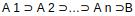

<!DOCTYPE HTML PUBLIC "-//W3C//DTD HTML 4.0 Transitional//EN">
<html>
<head>
	<meta http-equiv="content-type" content="text/html; charset=utf-8"/>
	<title></title>
	<meta name="generator" content="LibreOffice 6.0.7.3 (Linux)"/>
	<meta name="created" content="2020-02-19T08:08:49.648819225"/>
	<meta name="changed" content="2020-05-01T14:45:24.745172050"/>
	<style type="text/css">
		@page { margin: 2cm }
		p { margin-bottom: 0.25cm; line-height: 115% }
		h1 { margin-bottom: 0.21cm }
		h1.western { font-family: "Liberation Sans", sans-serif; font-size: 18pt }
		h1.cjk { font-family: "Noto Sans CJK SC"; font-size: 18pt }
		h1.ctl { font-family: "Lohit Devanagari"; font-size: 18pt }
		h2.western { font-family: "Liberation Sans", sans-serif; font-size: 16pt }
		h2.cjk { font-family: "Noto Sans CJK SC"; font-size: 16pt }
		h2.ctl { font-family: "Lohit Devanagari"; font-size: 16pt }
		a:link { so-language: zxx }
	</style>
</head>
<body lang="hu-HU" dir="ltr">
<h1 class="western" align="center">5.</h1>
<h2 class="western">Mátrix fogalma, műveletek, determináns, rang.
Speciális mátrixok, inverz. Mátrix, mint lineáris transzformáció.
Sajátérték, sajátvektor.</h2>
<h2 class="western">Mátrix fogalma, műveletek, determináns, rang. 
</h2>
<h2 class="western">
</h2>
<p><font face="Liberation Serif, serif"><font size="5" style="font-size: 17pt">M</font><font size="5" style="font-size: 17pt">át</font><font size="5" style="font-size: 17pt">rixm</font><font size="5" style="font-size: 17pt">ű</font><font size="5" style="font-size: 17pt">veletek<br/>
</font><font size="4" style="font-size: 14pt">1.
M</font><font size="4" style="font-size: 14pt">á</font><font size="4" style="font-size: 14pt">trixok
</font><font size="4" style="font-size: 14pt">ö</font><font size="4" style="font-size: 14pt">sszead</font><font size="4" style="font-size: 14pt">á</font><font size="4" style="font-size: 14pt">sa:
</font><font size="4" style="font-size: 13pt">Csak azonos t</font><font size="4" style="font-size: 13pt">í</font><font size="4" style="font-size: 13pt">pus</font><font size="4" style="font-size: 13pt">ú</font><font size="4" style="font-size: 13pt">
m</font><font size="4" style="font-size: 13pt">á</font><font size="4" style="font-size: 13pt">trixokat
tudunk </font><font size="4" style="font-size: 13pt">ö</font><font size="4" style="font-size: 13pt">sszeadni.
Legyenek A= (a</font><font size="2" style="font-size: 9pt">ij</font><font size="4" style="font-size: 13pt">),B=
(b</font><font size="2" style="font-size: 9pt">ij</font><font size="4" style="font-size: 13pt">),C=
(c</font><font size="2" style="font-size: 9pt">ij</font><font size="4" style="font-size: 13pt">)
m×n-es m</font><font size="4" style="font-size: 13pt">á</font><font size="4" style="font-size: 13pt">trixok.
Ekkor C=A+B, ha c</font><font size="2" style="font-size: 9pt">ij</font><font size="4" style="font-size: 13pt">=a</font><font size="2" style="font-size: 9pt">ij</font><font size="4" style="font-size: 13pt">+b</font><font size="2" style="font-size: 9pt">ij</font><font size="4" style="font-size: 13pt">;
i= 1,...,m, j= 1,...,n.</font></font></p>
<p><font face="Liberation Serif, serif"><font size="4" style="font-size: 14pt">2.
M</font><font size="4" style="font-size: 14pt">á</font><font size="4" style="font-size: 14pt">trixok
skal</font><font size="4" style="font-size: 14pt">á</font><font size="4" style="font-size: 14pt">rral
val</font><font size="4" style="font-size: 14pt">ó</font><font size="4" style="font-size: 14pt">
szorz</font><font size="4" style="font-size: 14pt">á</font><font size="4" style="font-size: 14pt">sa:
</font><font size="4" style="font-size: 13pt">Elemenk</font><font size="4" style="font-size: 13pt">é</font><font size="4" style="font-size: 13pt">nt
v</font><font size="4" style="font-size: 13pt">é</font><font size="4" style="font-size: 13pt">gezz</font><font size="4" style="font-size: 13pt">ü</font><font size="4" style="font-size: 13pt">k,
azaz ha λ</font>∈<font size="4" style="font-size: 13pt">R, A=
(a</font><font size="2" style="font-size: 9pt">ij</font><font size="4" style="font-size: 13pt">)</font>∈<font size="4" style="font-size: 13pt">M</font><font size="2" style="font-size: 9pt">m×n</font><font size="4" style="font-size: 13pt">,
akkor λA= (λa</font><font size="2" style="font-size: 9pt">ij</font><font size="4" style="font-size: 13pt">)</font>∈<font size="4" style="font-size: 13pt">M</font><font size="2" style="font-size: 9pt">m×n</font><font size="4" style="font-size: 13pt">.
Speci</font><font size="4" style="font-size: 13pt">á</font><font size="4" style="font-size: 13pt">lisan:
ha A </font><font size="4" style="font-size: 13pt">é</font><font size="4" style="font-size: 13pt">s
B sor-, vagy oszlopvektorok, akkor a fenti 2 m</font><font size="4" style="font-size: 13pt">ű</font><font size="4" style="font-size: 13pt">velet
</font><font size="4" style="font-size: 13pt">é</font><font size="4" style="font-size: 13pt">ppen
a vektorok szok</font><font size="4" style="font-size: 13pt">á</font><font size="4" style="font-size: 13pt">sos
</font><font size="4" style="font-size: 13pt">ö</font><font size="4" style="font-size: 13pt">sszead</font><font size="4" style="font-size: 13pt">á</font><font size="4" style="font-size: 13pt">sa
</font><font size="4" style="font-size: 13pt">é</font><font size="4" style="font-size: 13pt">s
skal</font><font size="4" style="font-size: 13pt">á</font><font size="4" style="font-size: 13pt">rral
val</font><font size="4" style="font-size: 13pt">ó</font><font size="4" style="font-size: 13pt">
szorz</font><font size="4" style="font-size: 13pt">á</font><font size="4" style="font-size: 13pt">sa.</font></font></p>
<p><font face="Liberation Serif, serif"><font size="4" style="font-size: 14pt">3.
M</font><font size="4" style="font-size: 14pt">á</font><font size="4" style="font-size: 14pt">trixszorz</font><font size="4" style="font-size: 14pt">á</font><font size="4" style="font-size: 14pt">s:
</font><font size="4" style="font-size: 13pt">Legyen A= (a</font><font size="2" style="font-size: 9pt">ij</font><font size="4" style="font-size: 13pt">)
m×k, B= (b</font><font size="2" style="font-size: 9pt">ij</font><font size="4" style="font-size: 13pt">)
k×n t</font><font size="4" style="font-size: 13pt">í</font><font size="4" style="font-size: 13pt">pus</font><font size="4" style="font-size: 13pt">ú</font><font size="4" style="font-size: 13pt">
m</font><font size="4" style="font-size: 13pt">á</font><font size="4" style="font-size: 13pt">trix.
Ekkor A </font><font size="4" style="font-size: 13pt">é</font><font size="4" style="font-size: 13pt">s
B szorzata az a C= (c</font><font size="2" style="font-size: 9pt">ij</font><font size="4" style="font-size: 13pt">)
m×n t</font><font size="4" style="font-size: 13pt">í</font><font size="4" style="font-size: 13pt">pus</font><font size="4" style="font-size: 13pt">ú</font><font size="4" style="font-size: 13pt">
m</font><font size="4" style="font-size: 13pt">á</font><font size="4" style="font-size: 13pt">trix,
amelyre</font></font></p>
<p>
</p>
<p><font face="Liberation Serif, serif"><font size="4" style="font-size: 14pt">A</font><font size="4" style="font-size: 14pt">
mátrixszorzás tulajdonságai:</font></font></p>
<p><font face="Liberation Serif, serif"><font size="4" style="font-size: 13pt">Ha
A m×n típusú, akkor E</font><font size="2" style="font-size: 9pt">m</font><font size="4" style="font-size: 13pt">·A=A
és A·E</font><font size="2" style="font-size: 9pt">n</font><font size="4" style="font-size: 13pt">=A.<br/>
Legyenek
A,B mátrixok és tegyük fel, hogy létezik AB. Ha λ∈R
tetszőleges, akkor λ(AB) = (λA)B=A(λB).<br/>
Ha A,B,C olyan
mátrixok, hogy AB és BC létezik, akkor (AB)C=A(BC). Azaz a
mátrixszorzás asszociatív. Ha A és B azonos típusú mátrixok és
létezik AC, akkor BC is létezik és (A+B)C=AC+BC. Azaz teljesül a
disztributivitás.<br/>
A mátrixszorzás nem kommutatív, azaz
általában AB!=BA.</font></font></p>
<p><font face="Liberation Serif, serif"><font size="4" style="font-size: 13pt">Legyen
A egy m×n-es mátrix. Azt az A</font><font size="2" style="font-size: 9pt">T</font><font size="4" style="font-size: 13pt">-vel
jel</font><font size="4" style="font-size: 13pt">ö</font><font size="4" style="font-size: 13pt">lt
n×m-es mátrixot, amelynek sorai az A oszlopai A transzponáltjának
nevezzük.</font></font></p>
<p><font face="Liberation Serif, serif"><font size="4" style="font-size: 13pt">A</font><font size="4" style="font-size: 14pt">
transzponálás tulajdonságai<br/>
</font><font size="4" style="font-size: 13pt">(A</font><font size="2" style="font-size: 9pt">T</font><font size="4" style="font-size: 13pt">)</font><font size="2" style="font-size: 9pt">T</font><font size="4" style="font-size: 13pt">=A
(azaz a transzponálás involutív m</font><font size="4" style="font-size: 13pt">ű</font><font size="4" style="font-size: 13pt">velet)
</font></font>
</p>
<p><font face="Liberation Serif, serif"><font size="4" style="font-size: 13pt">A
transzponálás és a mátrixszorzás kapcsolata: (AB)</font><font size="2" style="font-size: 9pt">T</font><font size="4" style="font-size: 13pt">=B</font><font size="2" style="font-size: 9pt">T</font><font size="4" style="font-size: 13pt">·A</font><font size="2" style="font-size: 9pt">T</font><font size="4" style="font-size: 13pt">.</font></font></p>
<p><font face="Liberation Serif, serif"><font size="5" style="font-size: 17pt">Determináns</font><font size="5" style="font-size: 17pt">ok</font><font size="4" style="font-size: 14pt">:
</font></font>
</p>
<p><font face="Liberation Serif, serif"><font size="4" style="font-size: 13pt">Legyen
n∈N és jelölje σ az{1,2,...,n}halmaz egy permutációját,</font><font face="sans-serif"><font size="4" style="font-size: 13pt">
</font></font><font size="4" style="font-size: 13pt">azaz legyen
σ:{1,2,...,n}→{1,2,...,n},i→σ(i) bijektív függvény. (Itt
σ(i) jelöli a permutációban az i. helyen álló elemet.) Azt
mondjuk, hogy a σ permutációnál az i és j elem inverzióban áll,
ha i&lt;j és σ(i)&gt; σ(j). Egy σ permutáció páros, ha benne
az inverzióban álló párok száma páros,és páratlan, ha ez a
szám páratlan.</font></font></p>
<p>
</p>
<p><font face="Liberation Serif, serif"><font size="4" style="font-size: 13pt">Ha
A </font>é<font size="4" style="font-size: 13pt">s B azonos rend</font><font size="4" style="font-size: 13pt">ű</font><font size="4" style="font-size: 13pt">
négyzetes mátrixok, akkor det(AB) = det(A)·det(B).</font></font></p>
<p>
</p>
<p><font face="Liberation Serif, serif"><font size="4" style="font-size: 14pt">A</font><font size="4" style="font-size: 14pt">
determináns tulajdonságai:</font></font></p>
<p><font face="Liberation Serif, serif"><font size="4" style="font-size: 13pt">det(A)
= det(A</font><font size="2" style="font-size: 9pt">T</font><font size="4" style="font-size: 13pt">)
<br/>
Ha A valamely sora csupa 0 elemb</font><font size="4" style="font-size: 13pt">ő</font><font size="4" style="font-size: 13pt">l
áll, akkor det(A) = 0.<br/>
Ha A két sorát felcseréljük, a
determináns−1-szeresére változik.<br/>
Ha A két sora egyenlő,
akkor det(A) = 0.<br/>
Ha A valamely sorát megszorozzuk egy λ valós
számmal, akkor az így kapott mátrix determinánsa λ·det(A).<br/>
Ha
A minden sorát megszorozzuk egy λ számmal és A n-ed rendű, akkor
a kapott mátrix determinánsa λ</font><font size="2" style="font-size: 9pt">n</font><font size="4" style="font-size: 13pt">·det(A).<br/>
Ha
A két sora egymás skalár szorosa, akkor det(A) = 0.<br/>
Egy
mátrix determinánsa nem változik, ha valamely sorához hozzáadjuk
egy másik sor λ-szorosát.<br/>
Ha A valamely sora előállítható
a többi sor lin</font><font size="4" style="font-size: 13pt">e</font><font size="4" style="font-size: 13pt">áris
kombinációjaként, akkor det(A) = 0.<br/>
A fentiek igazak sorok
helyett oszlopokra is.</font></font></p>
<p><font face="Liberation Serif, serif"><font size="4" style="font-size: 13pt">Ha
det(A)!= 0, akkor A sorai (vagy oszlopai) lineárisan független
vektorok. Ekkor ha A n×n-es: sorai R</font><font size="2" style="font-size: 9pt">n
</font><font size="4" style="font-size: 13pt">egy bázisát alkotják.</font></font></p>
<p><font face="Liberation Serif, serif"><font size="5" style="font-size: 17pt">A
determináns kapcsolata az invertálással</font></font></p>
<p><font face="Liberation Serif, serif"><font size="4" style="font-size: 13pt">Azt
mondjuk, hogy az A négyzetes mátrix szinguláris, ha determinánsa
0. Ellenkező esetben (azaz ha det(A)!= 0)A reguláris.</font></font></p>
<p><font face="Liberation Serif, serif"><font size="4" style="font-size: 13pt">Egy
négyzetes mátrix pontosan akkor invertálható, ha reguláris.</font></font></p>
<p><font face="Liberation Serif, serif"><font size="4" style="font-size: 13pt">Legyen
A egy reguláris mátrix. Mivel A·A−</font><font size="2" style="font-size: 9pt">1</font><font size="4" style="font-size: 13pt">=E,
ahol E az A-val azonos méretű egységmátrix, ezért a
determinánsok szorzás tétele alapján det(A)·det(A−</font><font size="2" style="font-size: 9pt">1</font><font size="4" style="font-size: 13pt">)
= det(E) = 1.(Itt az, hogy det(E) = 1, akár a definícióból, akár
a determináns kiszámítási módjai alapján könnyen adódik.) A
fenti egyenletből következik, hogy A és A−</font><font size="2" style="font-size: 9pt">1
</font><font size="4" style="font-size: 13pt">determinánsa egymás
reciproka:det(A)−</font><font size="2" style="font-size: 9pt">1</font><font size="4" style="font-size: 13pt">=
det(A−</font><font size="2" style="font-size: 9pt">1</font><font size="4" style="font-size: 13pt">).</font></font></p>
<p><font face="Liberation Serif, serif"><font size="5" style="font-size: 17pt">A
determináns kiszámítási módjai</font></font></p>
<p><font face="Liberation Serif, serif"><font size="1" style="font-size: 6pt">1</font><font size="4" style="font-size: 13pt">Sarrus-szabály:
2×2-esés 3×3-as mátrixok determinánsára</font></font></p>
<p><font face="Liberation Serif, serif"><font size="1" style="font-size: 6pt">2</font><font size="4" style="font-size: 13pt">Gauss-elimináció:
bizonyos – a fenti tulajdonságokat használó –átalakítások
révén a mátrixot felső háromszög alakúra hozzuk (főátló
alatt csupa 0), ekkor a determináns éppen a főátlóbeli elemek
szorzata. Ezek az átalakítások:<br/>
</font><font size="1" style="font-size: 6pt">I</font><font size="3" style="font-size: 12pt">sorcsere,
ekkor a determináns előjelet vált;<br/>
</font><font size="1" style="font-size: 6pt">I</font><font size="3" style="font-size: 12pt">λ</font><font size="4" style="font-size: 13pt">∈</font><font size="3" style="font-size: 12pt">Rkiemelése
egy sorból;<br/>
</font><font size="1" style="font-size: 6pt">I</font><font size="3" style="font-size: 12pt">egy
sorλ-szorosának hozzáadása egy másik sorhoz.</font></font></p>
<p><font face="Liberation Serif, serif"><font size="1" style="font-size: 6pt">3</font><font size="4" style="font-size: 13pt">Kifejtési
tétel: Legyen A egy n-edrendű mátrix. <br/>
</font><font size="1" style="font-size: 6pt">I</font><font size="3" style="font-size: 12pt">kiválasztjuk
A egy tetszőleges sorát (vagy oszlopát),<br/>
</font><font size="1" style="font-size: 6pt">I</font><font size="3" style="font-size: 12pt">ennek
minden elemét megszorozzuk az elemhez tartozó algebrai
aldeterminánssal,<br/>
</font><font size="1" style="font-size: 6pt">I</font><font size="3" style="font-size: 12pt">majd
a kapott szorzatokat összeadjuk.</font></font></p>
<p><font face="Liberation Serif, serif"><font size="4" style="font-size: 13pt">Az
a</font><font size="2" style="font-size: 9pt">ij </font><font size="4" style="font-size: 13pt">elemhez
tartozó algebrai aldetermináns (−1)</font><font size="2" style="font-size: 9pt">i+j</font><font size="4" style="font-size: 13pt">A</font><font size="2" style="font-size: 9pt">ij</font><font size="4" style="font-size: 13pt">,
ahol A</font><font size="2" style="font-size: 9pt">ij </font><font size="4" style="font-size: 13pt">annakaz
(n−1)-edrendű determinánsnak az értéke, amelyet A-ból az i.
sor és j. oszlop kihúzásával kapunk</font></font></p>
<h2 class="western">
</h2>
<p><font face="Liberation Serif, serif"><font size="4" style="font-size: 13pt">A
V vektort</font><font size="4" style="font-size: 13pt">é</font><font size="4" style="font-size: 13pt">r
egy nem</font><font size="4" style="font-size: 13pt">ü</font><font size="4" style="font-size: 13pt">res
W r</font><font size="4" style="font-size: 13pt">é</font><font size="4" style="font-size: 13pt">szhalmaz</font><font size="4" style="font-size: 13pt">á</font><font size="4" style="font-size: 13pt">t
V alter</font><font size="4" style="font-size: 13pt">é</font><font size="4" style="font-size: 13pt">nek
nevezz</font><font size="4" style="font-size: 13pt">ü</font><font size="4" style="font-size: 13pt">k,
ha W maga is vektort</font><font size="4" style="font-size: 13pt">é</font><font size="4" style="font-size: 13pt">r,
azaz z</font><font size="4" style="font-size: 13pt">á</font><font size="4" style="font-size: 13pt">rt
a vektor </font><font size="4" style="font-size: 13pt">ö</font><font size="4" style="font-size: 13pt">sszead</font><font size="4" style="font-size: 13pt">á</font><font size="4" style="font-size: 13pt">sra
 </font><font size="4" style="font-size: 13pt">é</font><font size="4" style="font-size: 13pt">s
a skal</font><font size="4" style="font-size: 13pt">á</font><font size="4" style="font-size: 13pt">rral
val</font><font size="4" style="font-size: 13pt">ó</font><font size="4" style="font-size: 13pt">
szorz</font><font size="4" style="font-size: 13pt">á</font><font size="4" style="font-size: 13pt">sra.</font></font></p>
<h2 class="western">Speciális mátrixok, inverz. 

</h2>
<h2 class="western">
</h2>
<h2 class="western"><br/>
<br/>

</h2>
<h2 class="western">Mátrix, mint lineáris transzformáció. 
</h2>
<p><font face="Liberation Serif, serif"><font size="4" style="font-size: 13pt">Legyen
V vektortér R felett. φ:V</font>→<font size="4" style="font-size: 13pt">V
lineáris transzformáció, ha additív, azaz </font>∀<font size="4" style="font-size: 13pt">u,v</font>∈<font size="4" style="font-size: 13pt">V:
φ(u+v) =φ(u) +φ(v); homogén, azaz </font>∀<font size="4" style="font-size: 13pt">v</font>∈<font size="4" style="font-size: 13pt">V,
λ</font>∈<font size="4" style="font-size: 13pt">R: φ(λv) =λφ(v).</font></font></p>
<p><font face="Liberation Serif, serif"><font size="4" style="font-size: 13pt">L</font><font size="4" style="font-size: 13pt">ineáris
transzformációk esetén nullvektor képe nullvektor.</font></font></p>
<p><font face="Liberation Serif, serif"><font size="4" style="font-size: 13pt">Példák:Forgatások,
tükrözések,λ-nyújtások.</font></font></p>
<p><font face="Liberation Serif, serif"><font size="4" style="font-size: 13pt">Vetítések,
pl.R</font><font size="2" style="font-size: 9pt">3 </font><font size="4" style="font-size: 13pt">egy
rögzített síkjára merőlegesen. </font></font>
</p>
<p><font face="Liberation Serif, serif"><font size="4" style="font-size: 13pt">Identikus
transzformáció: φ(v) =v,</font>∀<font size="4" style="font-size: 13pt">v</font>∈<font size="4" style="font-size: 13pt">V.</font></font></p>
<p><font face="Liberation Serif, serif"><font size="4" style="font-size: 13pt">Egy
lineáris transzformációt egyértelműen meghatároz egy bázison
való hatása, azaz ha B= (b</font><font size="2" style="font-size: 9pt">1</font><font size="4" style="font-size: 13pt">,b</font><font size="2" style="font-size: 9pt">2</font><font size="4" style="font-size: 13pt">,...,b</font><font size="2" style="font-size: 9pt">n</font><font size="4" style="font-size: 13pt">)
bázisa V-nek,w</font><font size="2" style="font-size: 9pt">1</font><font size="4" style="font-size: 13pt">,w</font><font size="2" style="font-size: 9pt">2</font><font size="4" style="font-size: 13pt">,...,w</font><font size="2" style="font-size: 9pt">n
</font><font size="4" style="font-size: 13pt">pedig tetszőleges
vektorai a vektortérnek, akkor egyértelműen létezik olyan φ
lineáris transzformáció, hogy φ(b</font><font size="2" style="font-size: 9pt">i</font><font size="4" style="font-size: 13pt">)
=w</font><font size="2" style="font-size: 9pt">i</font><font size="4" style="font-size: 13pt">.
Továbbá ha v=λ</font><font size="2" style="font-size: 9pt">1</font><font size="4" style="font-size: 13pt">b</font><font size="2" style="font-size: 9pt">1</font><font size="4" style="font-size: 13pt">+λ</font><font size="2" style="font-size: 9pt">2</font><font size="4" style="font-size: 13pt">b</font><font size="2" style="font-size: 9pt">2</font><font size="4" style="font-size: 13pt">+···+λ</font><font size="2" style="font-size: 9pt">n</font><font size="4" style="font-size: 13pt">b</font><font size="2" style="font-size: 9pt">n</font><font size="4" style="font-size: 13pt">,
akkor ennek φ </font>á<font size="4" style="font-size: 13pt">ltali
hatása:φ(v) =λ</font><font size="2" style="font-size: 9pt">1</font><font size="4" style="font-size: 13pt">w</font><font size="2" style="font-size: 9pt">1</font><font size="4" style="font-size: 13pt">+λ</font><font size="2" style="font-size: 9pt">2</font><font size="4" style="font-size: 13pt">w</font><font size="2" style="font-size: 9pt">2</font><font size="4" style="font-size: 13pt">+···+λ</font><font size="2" style="font-size: 9pt">n</font><font size="4" style="font-size: 13pt">w</font><font size="2" style="font-size: 9pt">n</font><font size="4" style="font-size: 13pt">.</font></font></p>
<p><font face="Liberation Serif, serif"><font size="4" style="font-size: 13pt">Legyen
V egy n-dimenziós valós vektortér,B= (b</font><font size="2" style="font-size: 9pt">1</font><font size="4" style="font-size: 13pt">,b</font><font size="2" style="font-size: 9pt">2</font><font size="4" style="font-size: 13pt">,...,b</font><font size="2" style="font-size: 9pt">n</font><font size="4" style="font-size: 13pt">)
bázisa V-nek, tekintsünk továbbá egy φ:V→V lineáris
transzformációt. Ekkor φ-nek a B bázisra vonatkozó mátrixa az
az n×n-es mátrix, amelynek i-edik oszlopában φ(b</font><font size="2" style="font-size: 9pt">i</font><font size="4" style="font-size: 13pt">)-nek
a B bázisra vonatkozó koordinátái állnak.<br/>
Példa: Legyen
φ:R</font><font size="2" style="font-size: 9pt">2</font><font size="4" style="font-size: 13pt">→R</font><font size="2" style="font-size: 9pt">2</font><font size="4" style="font-size: 13pt">,
(x,y)→φ(x,y) = (2x−y,−12x+ 3y). φ mátrixa a természetes
bázisban. φ(e</font><font size="2" style="font-size: 9pt">1</font><font size="4" style="font-size: 13pt">)
=φ(1,0) = (2,−12), φ(e</font><font size="2" style="font-size: 9pt">2</font><font size="4" style="font-size: 13pt">)
=φ(0,1) = (−1,3), ezért φ mátrixa ebben a bázisban</font></font></p>
<p>
<br/>
<br/>

</p>
<p><br/>
<br/>

</p>
<p><font face="Liberation Serif, serif"><font size="4" style="font-size: 13pt">φ
mátrixa ab</font><font size="2" style="font-size: 9pt">1</font><font size="4" style="font-size: 13pt">=
(1,1),b</font><font size="2" style="font-size: 9pt">2</font><font size="4" style="font-size: 13pt">=
(0,</font>−<font size="4" style="font-size: 13pt">1) bázisban.
Ekkorφ(b</font><font size="2" style="font-size: 9pt">1</font><font size="4" style="font-size: 13pt">)
= (1,</font>−<font size="4" style="font-size: 13pt">9)ésφ(b</font><font size="2" style="font-size: 9pt">2</font><font size="4" style="font-size: 13pt">)
= (1,</font>−<font size="4" style="font-size: 13pt">3). Ezeket a
vektorokat a (b</font><font size="2" style="font-size: 9pt">1</font><font size="4" style="font-size: 13pt">,b</font><font size="2" style="font-size: 9pt">2</font><font size="4" style="font-size: 13pt">)
bázisban kell felírnunk:φ(b</font><font size="2" style="font-size: 9pt">1</font><font size="4" style="font-size: 13pt">)
= (1,</font>−<font size="4" style="font-size: 13pt">9) = 1·b</font><font size="2" style="font-size: 9pt">1</font><font size="4" style="font-size: 13pt">+
10·b</font><font size="2" style="font-size: 9pt">2</font><font size="4" style="font-size: 13pt">,
φ(b</font><font size="2" style="font-size: 9pt">2</font><font size="4" style="font-size: 13pt">)
= (1,</font>−<font size="4" style="font-size: 13pt">3) = 1·b</font><font size="2" style="font-size: 9pt">1</font><font size="4" style="font-size: 13pt">+
4·b</font><font size="2" style="font-size: 9pt">2</font><font size="4" style="font-size: 13pt">.Ezért
a mátrix:</font></font></p>
<p>
<br/>
<br/>

</p>
<p><br/>
<br/>

</p>
<p>
</p>
<h2 class="western">Sajátérték, sajátvektor.</h2>
<p><font face="Liberation Serif, serif"><font size="4" style="font-size: 13pt">Legyen
φ:V</font>→<font size="4" style="font-size: 13pt">V lineáris
transzformáció. Egy nem-nulla v</font>∈<font size="4" style="font-size: 13pt">V
vektort φ sajátvektorának hívunk, ha </font>∃<font size="4" style="font-size: 13pt">λ</font>∈<font size="4" style="font-size: 13pt">R:
φ(v) =λv. Ekkor λ-t φ v-hez tartozó sajátértékének mondjuk.</font></font></p>
<p><font face="Liberation Serif, serif"><font size="4" style="font-size: 13pt">Ha
v sajátvektora φ-nek, akkor a hozzá tartozó sajátérték
egyértelmű. Ha λ sajátérték, akkor a hozzá tartozó
sajátvektorok halmaza altér: L</font><font size="2" style="font-size: 9pt">λ</font><font size="4" style="font-size: 13pt">:={v</font>∈<font size="4" style="font-size: 13pt">V|φ(v)
=λv} altér V-ben: a λ-hoz tartozó saját altér. </font></font>
</p>
<p><font face="Liberation Serif, serif"><font size="4" style="font-size: 13pt">Egy
φ lineáris transzformáció karakterisztikus polinomján a
det(A</font>−<font size="4" style="font-size: 13pt">λE</font><font size="2" style="font-size: 9pt">n</font><font size="4" style="font-size: 13pt">)
n-edfokú polinomot értjük, ahol n a tér dimenziója, A pedig φ
mátrix a tetszőleges bázisban. Ennek gyökei éppen φ
sajátértékei.</font></font></p>
<p>
</p>
<h2 class="western" style="page-break-before: always">A
problémaredukciós reprezentáció és az ÉS/VAGY gráfok.
Ismeretreprezentációs technikák, bizonytalanság-kezelés (fuzzy
logika). A rezolúciós kalkulus. A logikai program és az SLD
rezolúció. A logikai programozás alapvető módszerei.</h2>
<h2 class="western">A problémaredukciós reprezentáció és az
ÉS/VAGY gráfok.</h2>
<p><font face="Liberation Serif, serif"><font size="3" style="font-size: 12pt">Gyakran
előfordul, hogy egy problémát úgy próbálunk megoldani, hogy
több külön-külön megoldandó részproblémára bontjuk. Ha a
részproblémákat megoldjuk, az eredeti probléma megoldását is
megkapjuk. A részproblémák megoldását további részek meg
oldására vezetjük vissza, egészen addig, amíg csupa olyan
problémához nem jutunk, amelyeket egyszerűségüknél fogva már
könnyedén meg tudunk oldani. A probléma megoldásnak ezt a módját
problémaredukciónak nevezzük. </font></font>Redukció esetén a
problémát addig bontom egyszerűbb problémákra, míg meg nem
tudom őket oldani. Ezt redukciós operátorokkal valósítom
meg.<br/>
Redukciós operátorok értékkészlete a probléma
hatványhalmaza.<br/>
A probléma problémaredukciós
reprezentációja: &lt;P, p, <font face="Liberation Serif, serif">ε,
R&gt; </font><font face="Liberation Serif, serif">(itt az </font><font face="Liberation Serif, serif">ε
</font><font face="Liberation Serif, serif">csak az E írott
változata, nem epsilon)</font><font face="Liberation Serif, serif">,
</font><font face="Liberation Serif, serif">ahol<br/>
- A</font><font face="Liberation Serif, serif"><font size="3" style="font-size: 12pt">z
eredeti problémát, jelöljük most p-vel.<br/>
- Egy probléma
részproblémákra bontása során a nyert részek az eredeti
problémához hasonló, de annál egyszerűbb problémák. Jelöljük
az így nyert problémahalmazt P-vel. Természetesen p∈P.<br/>
- P
problémáinak összegyűjtése során törekszünk arra, hogy
legyenek közöttük olyanok, melyeket meg tudunk oldani, vagy
ismerjük a megoldásukat. Ezek a problémák az ún.egyszerű
problémák. Az egyszerű problémák halmazát </font></font><font face="Liberation Serif, serif"><font size="3" style="font-size: 12pt">ε</font></font><font face="Liberation Serif, serif"><font size="3" style="font-size: 12pt">-vel
jelöljük. </font></font><font face="Liberation Serif, serif"><font size="3" style="font-size: 12pt">ε</font></font><font face="Liberation Serif, serif"><font size="3" style="font-size: 12pt">
⊂P, hiszen p !∈</font></font><font face="Liberation Serif, serif"><font size="3" style="font-size: 12pt">ε</font></font><font face="Liberation Serif, serif"><font size="3" style="font-size: 12pt">,
különben nincs megoldandó feladat.</font></font></p>
<p><font face="Liberation Serif, serif"><font size="3" style="font-size: 12pt">Meg
kell még adni a problémákat egyszerűsítő, illetve részekre
bontó redukciós operátorokat. Egy redukciós operátor egy
problémához azokat a (rész)problémákat rendeli hozzá, melyek
egyenkénti megoldásával a probléma megoldása is előáll.
Jelöljön a redukciós operátorok R véges halmazából r egy
operátort. Ekkor <br/>
Dom(r) ={q|q∈P \ <font face="Liberation Serif, serif">ε</font>
és r-alkalmazásának-előfeltétele(q)} és <br/>
Rng(r) ={r(q)
={q<sub>1</sub>, . . . , q<sub>m</sub>}|q∈Dom(r)és q<sub>1</sub>,
. . . , q<sub>m</sub>∈P}.<br/>
Tehát egy redukciós operátor
egy-egy problémához P egy-egy részhalmazát rendeli, így
értékkészlete P hatványhalmazának valamely részhalmaza.</font></font></p>
<p><font face="Liberation Serif, serif"><font size="3" style="font-size: 12pt">A
definíció tehát:</font></font><font face="Liberation Serif, serif"><font size="3" style="font-size: 12pt">
</font></font><font face="Liberation Serif, serif"><font size="3" style="font-size: 12pt">Legyen
p egy probléma. Azt mondjuk, hogy a p problémát problémaredukciós
reprezentációval írtuk le, ha megadtuk a</font></font><font face="Noto Sans CJK SC"><font size="2" style="font-size: 10pt"><span lang="zh-CN"><font face="Liberation Serif, serif"><font size="3" style="font-size: 12pt">〈</font></font></span></font></font><font face="Liberation Serif, serif"><font size="3" style="font-size: 12pt">P,
p,E,R</font></font><font face="Noto Sans CJK SC"><font size="2" style="font-size: 10pt"><span lang="zh-CN"><font face="Liberation Serif, serif"><font size="3" style="font-size: 12pt">〉</font></font></span></font></font><font face="Liberation Serif, serif"><font size="3" style="font-size: 12pt">négyest,
azaz<br/>
•a megoldandó p∈P problémát,<br/>
•a P !</font></font><font face="Liberation Serif, serif"><font size="3" style="font-size: 12pt">=</font></font><font face="Liberation Serif, serif"><font size="3" style="font-size: 12pt">∅
halmazt, a p problémához hasonló problémák halmazát,<br/>
•az
egyszerű problémák </font></font><font face="Liberation Serif, serif"><font size="3" style="font-size: 12pt">ε</font></font><font face="Liberation Serif, serif"><font size="3" style="font-size: 12pt">
⊂P halmazát és<br/>
•a redukciós operátorok R !=∅ véges
halmazát.<br/>
Jelölése:</font></font><font face="Noto Sans CJK SC"><font size="2" style="font-size: 10pt"><span lang="zh-CN"><font face="Liberation Serif, serif"><font size="3" style="font-size: 12pt">〈</font></font></span></font></font><font face="Liberation Serif, serif"><font size="3" style="font-size: 12pt">P,
p,E,R</font></font><font face="Noto Sans CJK SC"><font size="2" style="font-size: 10pt"><span lang="zh-CN"><font face="Liberation Serif, serif"><font size="3" style="font-size: 12pt">〉</font></font></span></font></font><font face="Liberation Serif, serif"><font size="3" style="font-size: 12pt">.</font></font></p>
<p><font face="Liberation Serif, serif"><font size="3" style="font-size: 12pt"><span style="font-weight: normal">Legyen
a p probléma a</span></font></font><font face="Liberation Serif, serif"><font size="3" style="font-size: 12pt"><span lang="zh-CN"><span style="font-weight: normal">〈</span></span></font></font><font face="Liberation Serif, serif"><font size="3" style="font-size: 12pt"><span style="font-weight: normal">P,
p,E,R</span></font></font><font face="Liberation Serif, serif"><font size="3" style="font-size: 12pt"><span lang="zh-CN"><span style="font-weight: normal">〉</span></span></font></font><font face="Liberation Serif, serif"><font size="3" style="font-size: 12pt"><span style="font-weight: normal">reprezentációval
leírva és legyenek<br/>
Q={p</span><sub><span style="font-weight: normal">1</span></sub><span style="font-weight: normal">,
p</span><sub><span style="font-weight: normal">2</span></sub><span style="font-weight: normal">,
. . . , p</span><sub><span style="font-weight: normal">i</span></sub><span style="font-weight: normal">,
. . . , p</span><sub><span style="font-weight: normal">n</span></sub><span style="font-weight: normal">}⊆P
<br/>
Q′={p</span><sub><span style="font-weight: normal">1</span></sub><span style="font-weight: normal">,
p</span><sub><span style="font-weight: normal">2</span></sub><span style="font-weight: normal">,
. . . , p</span><sub><span style="font-weight: normal">i−1</span></sub><span style="font-weight: normal">,
q</span><sub><span style="font-weight: normal">1</span></sub><span style="font-weight: normal">,
q</span><sub><span style="font-weight: normal">2</span></sub><span style="font-weight: normal">,
. . . , q</span><sub><span style="font-weight: normal">m</span></sub><span style="font-weight: normal">,
p</span><sub><span style="font-weight: normal">i+1</span></sub><span style="font-weight: normal">,
. . . , p</span><sub><span style="font-weight: normal">n</span></sub><span style="font-weight: normal">}⊆P<br/>
egy-egy
problémahalmaz (n≥1, m≥1). </span><span style="font-weight: normal">(pi-ből
lett q1...qm)</span><span style="font-weight: normal"><br/>
Azt
mondjuk, hogy a Q problémahalmaz egy lépésben vagy közvetlenül
redukálható a </span><span style="font-weight: normal">Q</span><span style="font-weight: normal">′
problémahalmazzá, ha van olyan r∈ R redukciós operátor,melyre
p</span><sub><span style="font-weight: normal">i</span></sub><span style="font-weight: normal">∈Dom(r),
és r(p</span><sub><span style="font-weight: normal">i</span></sub><span style="font-weight: normal">)
={q</span><sub><span style="font-weight: normal">1</span></sub><span style="font-weight: normal">,
q</span><sub><span style="font-weight: normal">2</span></sub><span style="font-weight: normal">,
. . . , q</span><sub><span style="font-weight: normal">m</span></sub><span style="font-weight: normal">}.
Ennek jelölése: Q∢Q′, illetve ha fontos, hogy az r redukciós
operátor segítségével állítottu</span><span style="font-weight: normal">k</span><span style="font-weight: normal">
elő Q-ból a Q′-t, akkor Q∢rQ′.</span></font></font></p>
<p><font face="Liberation Serif, serif"><font size="3" style="font-size: 12pt"><span style="font-weight: normal">Legyen
a p probléma reprezentációja</span></font></font><font face="Liberation Serif, serif"><font size="3" style="font-size: 12pt"><span lang="zh-CN"><span style="font-weight: normal">〈</span></span></font></font><font face="Liberation Serif, serif"><font size="3" style="font-size: 12pt"><span style="font-weight: normal">P,
p,E,R</span></font></font><font face="Liberation Serif, serif"><font size="3" style="font-size: 12pt"><span lang="zh-CN"><span style="font-weight: normal">〉</span></span></font></font><font face="Liberation Serif, serif"><font size="3" style="font-size: 12pt"><span style="font-weight: normal">,és
Q, Q′⊆P. A Q-ból a Q′ redukálható, ha van olyan P</span><sub><span style="font-weight: normal">1</span></sub><span style="font-weight: normal">,
. . . , P</span><sub><span style="font-weight: normal">k</span></sub><span style="font-weight: normal">⊆P(k≥2)
véges problémahalmaz-sorozat, hogy P</span><sub><span style="font-weight: normal">1</span></sub><span style="font-weight: normal">=Q,
P</span><sub><span style="font-weight: normal">k</span></sub><span style="font-weight: normal">=Q′
és P</span><sub><span style="font-weight: normal">i</span></sub><span style="font-weight: normal">∢P</span><sub><span style="font-weight: normal">i+1</span></sub><span style="font-weight: normal">
minden 1≤i≤k−1 esetén. Jelölése:Q∢∗Q′.<br/>
Nyilvánvaló,
hogy ha P</span><sub><span style="font-weight: normal">i</span></sub><span style="font-weight: normal">∢P</span><sub><span style="font-weight: normal">i+1</span></sub><span style="font-weight: normal">
minden 1≤i≤k−1 esetén, akkor van olyan r</span><sub><span style="font-weight: normal">1</span></sub><span style="font-weight: normal">,
r</span><sub><span style="font-weight: normal">2</span></sub><span style="font-weight: normal">,
. . . , r</span><sub><span style="font-weight: normal">k−1</span></sub><span style="font-weight: normal">
redukciós operátor-sorozat, hogy P</span><sub><span style="font-weight: normal">i</span></sub><span style="font-weight: normal">∢r</span><sub><span style="font-weight: normal">i
</span></sub><span style="font-weight: normal">P</span><sub><span style="font-weight: normal">i+1</span></sub><span style="font-weight: normal">(1≤i≤k−1).
Ilyenkor azt mondjuk, hogy a Q problémahalmazt a Q′
problémahalmazzá az r</span><sub><span style="font-weight: normal">1</span></sub><span style="font-weight: normal">,
r</span><sub><span style="font-weight: normal">2</span></sub><span style="font-weight: normal">,
. . . , r</span><sub><span style="font-weight: normal">k−1</span></sub><span style="font-weight: normal">
redukciós operátorsorozat segítségével redukáltuk.
Jelölve:Q∢∗r1,...,rk−1Q′.</span></font></font></p>
<p><font face="Liberation Serif, serif"><font size="3" style="font-size: 12pt"><span style="font-weight: normal">Legyen
a p probléma problémaredukciós reprezentációja</span></font></font><font face="Liberation Serif, serif"><font size="3" style="font-size: 12pt"><span lang="zh-CN"><span style="font-weight: normal">〈</span></span></font></font><font face="Liberation Serif, serif"><font size="3" style="font-size: 12pt"><span style="font-weight: normal">P,
p,E,R</span></font></font><font face="Liberation Serif, serif"><font size="3" style="font-size: 12pt"><span lang="zh-CN"><span style="font-weight: normal">〉</span></span></font></font><font face="Liberation Serif, serif"><font size="3" style="font-size: 12pt"><span style="font-weight: normal">.
A p probléma megoldható ebben a reprezentációban, ha {p}csupa
egyszerű problémából álló problémahalmazzá redukálható ,
azaz {p}∢∗r</span><sub><span style="font-weight: normal">1</span></sub><span style="font-weight: normal">,...,r</span><sub><span style="font-weight: normal">l
</span></sub><span style="font-weight: normal">Q⊆E. Ekkor az r</span><sub><span style="font-weight: normal">1</span></sub><span style="font-weight: normal">,
. . . , r</span><sub><span style="font-weight: normal">l</span></sub><span style="font-weight: normal">
redukciós operátorsorozatot tekinthetjük a probléma megoldásának.</span></font></font></p>
<p><font face="Liberation Serif, serif"><font size="3" style="font-size: 12pt"><span style="font-weight: normal">(megj.
könnyebb érthetőség kedvéért az állapottér reprezentációból
ismert elérhetőséghez hasonlítsuk a redukálhatóságot)</span></font></font></p>
<p><font face="Liberation Serif, serif"><font size="3" style="font-size: 12pt"><span style="font-weight: normal">A
feladatunk lehet<br/>
•annak eldöntése, hogy megoldható-e a
probléma az adott problémaredukciós reprezentációban,<br/>
•egy
(esetleg az összes) megoldás előállítása,<br/>
•valamilyen
minősítés alapján jó megoldás előállítása (a megoldások
között különbséget tehetünk, pl. a megoldás költsége
alapján).</span></font></font></p>
<p><font face="Liberation Serif, serif"><font size="3" style="font-size: 12pt"><span style="font-weight: normal">Jóságot,
vagy minőséget rendelhetek egy megoldáshoz annak költsége
alapján (amely az egyszerű probléma megoldásának és az
operátoroknak a költsége): redukálás és a redukció során
előállt összes probléma megoldásának költsége + redukálás
költsége.<br/>
Ha a megoldás párhuzamosítható és fontos a
végrehajtási idő, akkor a párhuzamosítás miatt a leghosszabb
végrehajtási időt kell figyelembe venni, hiszen azt kell megvárni.</span></font></font></p>
<p><font face="Liberation Serif, serif"><font size="3" style="font-size: 12pt"><b>G</b><b>ráf</b><span style="font-weight: normal">fal
szemléltetve:</span></font></font></p>
<p><font face="Liberation Serif, serif"><font size="3" style="font-size: 12pt"><span style="font-weight: normal">-
csúcsok: a problémaosztály problémái<br/>
- start: megoldandó
probléma<br/>
- célcsúcsok (levelek): egyszerű, megoldható
problémák<br/>
- redukciós operátorok: problémát redukálnak
probléma halmazzá.</span></font></font></p>
<p><font face="Liberation Serif, serif"><font size="3" style="font-size: 12pt"><span style="font-weight: normal">p
redukálásának eredménye n db különböző probléma, melyek egy
ÉS élköteget alkotnak. Keresés során azt kell eldönteni, hogy
melyik redukciót bontjuk tovább. Tehát az ÉS élkötegek VAGY
kapcsolatban állnak egymással =&gt; ÉS/VAGY gráf. </span></font></font>
</p>
<p><font face="Liberation Serif, serif"><font size="3" style="font-size: 12pt"><span style="font-weight: normal">Legyen
a p probléma a</span></font></font><font face="Noto Sans CJK SC"><font size="2" style="font-size: 10pt"><span lang="zh-CN"><font face="Liberation Serif, serif"><font size="3" style="font-size: 12pt"><span style="font-weight: normal">〈</span></font></font></span></font></font><font face="Liberation Serif, serif"><font size="3" style="font-size: 12pt"><span style="font-weight: normal">P,
p,E,R</span></font></font><font face="Noto Sans CJK SC"><font size="2" style="font-size: 10pt"><span lang="zh-CN"><font face="Liberation Serif, serif"><font size="3" style="font-size: 12pt"><span style="font-weight: normal">〉</span></font></font></span></font></font><font face="Liberation Serif, serif"><font size="3" style="font-size: 12pt"><span style="font-weight: normal">reprezentációval
megadva. Ez a reprezentáció is egy irányított gráfot, ún.
ÉS/VAGY gráfot határoz meg.<br/>
•A P problémahalmaz elemei (a
problémák) a gráfcsúcsai. Vezessük be a q∈P probléma által
definiált csúcsra az n</span></font></font><sub><font face="Liberation Serif, serif"><font size="3" style="font-size: 12pt"><span style="font-weight: normal">q</span></font></font></sub><font face="Liberation Serif, serif"><font size="3" style="font-size: 12pt"><span style="font-weight: normal">
jelölést. Ekkor a gráf csúcsainak halmaza N={n</span></font></font><sub><font face="Liberation Serif, serif"><font size="3" style="font-size: 12pt"><span style="font-weight: normal">q</span></font></font></sub><font face="Liberation Serif, serif"><font size="3" style="font-size: 12pt"><span style="font-weight: normal">|q∈P}.<br/>
•A
gráf csúcsai közül kitüntetett szerepet játszanak a p problémát
szemléltető ún.startcsúcs (jele:n</span></font></font><sub><font face="Liberation Serif, serif"><font size="3" style="font-size: 12pt"><span style="font-weight: normal">p
</span></font></font></sub><font face="Liberation Serif, serif"><font size="3" style="font-size: 12pt"><span style="font-weight: normal">vagy
s)<br/>
•és az egyszerű problémákat szemléltető terminális
csúcsok. A terminális csúcsok halmaza tehát: T={n</span></font></font><sub><font face="Liberation Serif, serif"><font size="3" style="font-size: 12pt"><span style="font-weight: normal">e</span></font></font></sub><font face="Liberation Serif, serif"><font size="3" style="font-size: 12pt"><span style="font-weight: normal">|e∈E}.
<br/>
</span></font></font><font face="Liberation Serif, serif"><font size="3" style="font-size: 12pt"><span style="font-weight: normal">•Egy
q∈ P problémát szemléltető csúcsból irányított éleket
húzunk az q</span></font></font><sub><font face="Liberation Serif, serif"><font size="3" style="font-size: 12pt"><span style="font-weight: normal">1</span></font></font></sub><font face="Liberation Serif, serif"><font size="3" style="font-size: 12pt"><span style="font-weight: normal">,
. . . , q</span></font></font><sub><font face="Liberation Serif, serif"><font size="3" style="font-size: 12pt"><span style="font-weight: normal">m</span></font></font></sub><font face="Liberation Serif, serif"><font size="3" style="font-size: 12pt"><span style="font-weight: normal">∈P
problémákat szemléltető n</span></font></font><sub><font face="Liberation Serif, serif"><font size="3" style="font-size: 12pt"><span style="font-weight: normal">q1</span></font></font></sub><font face="Liberation Serif, serif"><font size="3" style="font-size: 12pt"><span style="font-weight: normal">,
. . . , n</span></font></font><sub><font face="Liberation Serif, serif"><font size="3" style="font-size: 12pt"><span style="font-weight: normal">qm
</span></font></font></sub><font face="Liberation Serif, serif"><font size="3" style="font-size: 12pt"><span style="font-weight: normal">csúcsokba,
amikor {q}∢{q</span></font></font><sub><font face="Liberation Serif, serif"><font size="3" style="font-size: 12pt"><span style="font-weight: normal">1</span></font></font></sub><font face="Liberation Serif, serif"><font size="3" style="font-size: 12pt"><span style="font-weight: normal">,
q</span></font></font><sub><font face="Liberation Serif, serif"><font size="3" style="font-size: 12pt"><span style="font-weight: normal">2</span></font></font></sub><font face="Liberation Serif, serif"><font size="3" style="font-size: 12pt"><span style="font-weight: normal">,
. . . , q</span></font></font><sub><font face="Liberation Serif, serif"><font size="3" style="font-size: 12pt"><span style="font-weight: normal">m</span></font></font></sub><font face="Liberation Serif, serif"><font size="3" style="font-size: 12pt"><span style="font-weight: normal">}.
Ezek az élek összetartozónak tekinthetők: egy ÉS élköteget
vagy hiperélt alkotnak. A gráf hiperéleinek halmaza tehát a
következő: E={(n</span></font></font><sub><font face="Liberation Serif, serif"><font size="3" style="font-size: 12pt"><span style="font-weight: normal">q</span></font></font></sub><font face="Liberation Serif, serif"><font size="3" style="font-size: 12pt"><span style="font-weight: normal">,{n</span></font></font><sub><font face="Liberation Serif, serif"><font size="3" style="font-size: 12pt"><span style="font-weight: normal">q1</span></font></font></sub><font face="Liberation Serif, serif"><font size="3" style="font-size: 12pt"><span style="font-weight: normal">,
n</span></font></font><sub><font face="Liberation Serif, serif"><font size="3" style="font-size: 12pt"><span style="font-weight: normal">q2</span></font></font></sub><font face="Liberation Serif, serif"><font size="3" style="font-size: 12pt"><span style="font-weight: normal">,
. . . , n</span></font></font><sub><font face="Liberation Serif, serif"><font size="3" style="font-size: 12pt"><span style="font-weight: normal">qm</span></font></font></sub><font face="Liberation Serif, serif"><font size="3" style="font-size: 12pt"><span style="font-weight: normal">})|q,
q</span></font></font><sub><font face="Liberation Serif, serif"><font size="3" style="font-size: 12pt"><span style="font-weight: normal">1</span></font></font></sub><font face="Liberation Serif, serif"><font size="3" style="font-size: 12pt"><span style="font-weight: normal">,
q</span></font></font><sub><font face="Liberation Serif, serif"><font size="3" style="font-size: 12pt"><span style="font-weight: normal">2</span></font></font></sub><font face="Liberation Serif, serif"><font size="3" style="font-size: 12pt"><span style="font-weight: normal">,
. . . , q</span></font></font><sub><font face="Liberation Serif, serif"><font size="3" style="font-size: 12pt"><span style="font-weight: normal">m</span></font></font></sub><font face="Liberation Serif, serif"><font size="3" style="font-size: 12pt"><span style="font-weight: normal">∈P
és {q}∢{n</span></font></font><sub><font face="Liberation Serif, serif"><font size="3" style="font-size: 12pt"><span style="font-weight: normal">q1</span></font></font></sub><font face="Liberation Serif, serif"><font size="3" style="font-size: 12pt"><span style="font-weight: normal">,
n</span></font></font><sub><font face="Liberation Serif, serif"><font size="3" style="font-size: 12pt"><span style="font-weight: normal">q2</span></font></font></sub><font face="Liberation Serif, serif"><font size="3" style="font-size: 12pt"><span style="font-weight: normal">,
. . . , n</span></font></font><sub><font face="Liberation Serif, serif"><font size="3" style="font-size: 12pt"><span style="font-weight: normal">qm</span></font></font></sub><font face="Liberation Serif, serif"><font size="3" style="font-size: 12pt"><span style="font-weight: normal">}}.
Azt mondjuk, hogy az</span></font></font><font face="Noto Sans CJK SC"><font size="2" style="font-size: 10pt"><span lang="zh-CN"><font face="Liberation Serif, serif"><font size="3" style="font-size: 12pt"><span style="font-weight: normal">〈</span></font></font></span></font></font><font face="Liberation Serif, serif"><font size="3" style="font-size: 12pt"><span style="font-weight: normal">N,
s, T, E</span></font></font><font face="Noto Sans CJK SC"><font size="2" style="font-size: 10pt"><span lang="zh-CN"><font face="Liberation Serif, serif"><font size="3" style="font-size: 12pt"><span style="font-weight: normal">〉</span></font></font></span></font></font><font face="Liberation Serif, serif"><font size="3" style="font-size: 12pt"><span style="font-weight: normal">irányított
ÉS/VAGY gráf a p probléma</span></font></font><font face="Noto Sans CJK SC"><font size="2" style="font-size: 10pt"><span lang="zh-CN"><font face="Liberation Serif, serif"><font size="3" style="font-size: 12pt"><span style="font-weight: normal">〈</span></font></font></span></font></font><font face="Liberation Serif, serif"><font size="3" style="font-size: 12pt"><span style="font-weight: normal">P,p,E,R</span></font></font><font face="Noto Sans CJK SC"><font size="2" style="font-size: 10pt"><span lang="zh-CN"><font face="Liberation Serif, serif"><font size="3" style="font-size: 12pt"><span style="font-weight: normal">〉</span></font></font></span></font></font><font face="Liberation Serif, serif"><font size="3" style="font-size: 12pt"><span style="font-weight: normal">problémaredukciós
reprezentációjához tartozó reprezentációs gráfja.</span></font></font></p>
<p><font face="Liberation Serif, serif"><font size="3" style="font-size: 12pt"><span style="font-weight: normal">Legyen</span></font></font><font face="Liberation Serif, serif"><font size="3" style="font-size: 12pt"><span lang="zh-CN"><span style="font-weight: normal">〈</span></span></font></font><font face="Liberation Serif, serif"><font size="3" style="font-size: 12pt"><span style="font-weight: normal">N,
s, T, E</span></font></font><font face="Liberation Serif, serif"><font size="3" style="font-size: 12pt"><span lang="zh-CN"><span style="font-weight: normal">〉</span></span></font></font><font face="Liberation Serif, serif"><font size="3" style="font-size: 12pt"><span style="font-weight: normal">a
p probléma</span></font></font><font face="Liberation Serif, serif"><font size="3" style="font-size: 12pt"><span lang="zh-CN"><span style="font-weight: normal">〈</span></span></font></font><font face="Liberation Serif, serif"><font size="3" style="font-size: 12pt"><span style="font-weight: normal">P,
p,E,R</span></font></font><font face="Liberation Serif, serif"><font size="3" style="font-size: 12pt"><span lang="zh-CN"><span style="font-weight: normal">〉</span></span></font></font><font face="Liberation Serif, serif"><font size="3" style="font-size: 12pt"><span style="font-weight: normal">problémaredukciós
reprezentációjához tartozó reprezentációs gráfja. Pontosan
akkor áll fenn a {q}∢∗{q</span><sub><span style="font-weight: normal">1</span></sub><span style="font-weight: normal">,
q</span><sub><span style="font-weight: normal">2</span></sub><span style="font-weight: normal">,
. . . , q</span><sub><span style="font-weight: normal">m</span></sub><span style="font-weight: normal">}
reláció, ha a reprezentációs gráfban van az n</span><sub><span style="font-weight: normal">q
</span></sub><span style="font-weight: normal">csúcsából induló
olyan hiperút, melynek levelei éppen az{n</span><sub><span style="font-weight: normal">q1</span></sub><span style="font-weight: normal">,
n</span><sub><span style="font-weight: normal">q2</span></sub><span style="font-weight: normal">,
. . . , n</span><sub><span style="font-weight: normal">qm</span></sub><span style="font-weight: normal">}csúcsok.</span></font></font></p>
<p><font face="Liberation Serif, serif"><font size="3" style="font-size: 12pt"><span style="font-weight: normal">Tegyük
fel, hogy {q}∢∗{q</span><sub><span style="font-weight: normal">1</span></sub><span style="font-weight: normal">,
q</span><sub><span style="font-weight: normal">2</span></sub><span style="font-weight: normal">,
. . . , q</span><sub><span style="font-weight: normal">m</span></sub><span style="font-weight: normal">}.
Azaz </span><span style="font-weight: normal">definíció alapján</span><span style="font-weight: normal">
a reprezentációs gráfunkban egy k−1 hiperélből álló
sorozatunk van, melyben az első hiperél a q-t szemléltető n</span><sub><span style="font-weight: normal">q</span></sub><span style="font-weight: normal">
csúcsból indul, minden következő hiperél kezdőcsúcsa valamely
előző hiperél végcsúcsa, és minden csúcsból legfeljebb egy
hiperél indul. Tehát a szemléltető részgráf egy hiperút.
Továbbá a sorozat utolsó halmazának,P</span><sub><span style="font-weight: normal">k</span></sub><span style="font-weight: normal">-nak
a problémái azok, amiket nem bontottunk tovább, tehát az ezeket
szemléltető csúcsok a hiperút levelei.<br/>
Most tegyük fel azt,
hogy a reprezentációs gráf n</span><sub><span style="font-weight: normal">q</span></sub><span style="font-weight: normal">
csúcsából indul olyan hiperút, melynek levelei az{n</span><sub><span style="font-weight: normal">q1</span></sub><span style="font-weight: normal">,
n</span><sub><span style="font-weight: normal">q2</span></sub><span style="font-weight: normal">,
. . . , n</span><sub><span style="font-weight: normal">qm</span></sub><span style="font-weight: normal">}csúcsok.
A sorozat minden (n</span><sub><span style="font-weight: normal">i</span></sub><span style="font-weight: normal">,{n</span><sub><span style="font-weight: normal">i1</span></sub><span style="font-weight: normal">,
n</span><sub><span style="font-weight: normal">i2</span></sub><span style="font-weight: normal">,
. . . , n</span><sub><span style="font-weight: normal">imi</span></sub><span style="font-weight: normal">})
hiperéle egy redukciós operátoralkalmazást szemléltet: az n</span><sub><span style="font-weight: normal">i</span></sub><span style="font-weight: normal">
által sze</span><span style="font-weight: normal">m</span><span style="font-weight: normal">léltetett
problémát bontja a redukciós operátor az{n</span><sub><span style="font-weight: normal">i1</span></sub><span style="font-weight: normal">,
n</span><sub><span style="font-weight: normal">i2</span></sub><span style="font-weight: normal">,
. . . , n</span><sub><span style="font-weight: normal">imi</span></sub><span style="font-weight: normal">}csúcsok
által szemléltetett problémákká. Tehát a hiperél sorozat egy
redukciós operátorsorozat, mely első operátorát q-ra
alkalmaztuk, az összes többit pedig, valamely megelőző operátor
eredményeképpen előállt problémára. Legyen</span></font></font><font face="Liberation Serif, serif"><font size="3" style="font-size: 12pt"><span lang="zh-CN"><span style="font-weight: normal">〈</span></span></font></font><font face="Liberation Serif, serif"><font size="3" style="font-size: 12pt"><span style="font-weight: normal">N,
s, T, E</span></font></font><font face="Liberation Serif, serif"><font size="3" style="font-size: 12pt"><span lang="zh-CN"><span style="font-weight: normal">〉</span></span></font></font><font face="Liberation Serif, serif"><font size="3" style="font-size: 12pt"><span style="font-weight: normal">a
p probléma</span></font></font><font face="Liberation Serif, serif"><font size="3" style="font-size: 12pt"><span lang="zh-CN"><span style="font-weight: normal">〈</span></span></font></font><font face="Liberation Serif, serif"><font size="3" style="font-size: 12pt"><span style="font-weight: normal">P,p,E,R</span></font></font><font face="Liberation Serif, serif"><font size="3" style="font-size: 12pt"><span lang="zh-CN"><span style="font-weight: normal">〉</span></span></font></font><font face="Liberation Serif, serif"><font size="3" style="font-size: 12pt"><span style="font-weight: normal">problémaredukciós
reprezentációjához tartozó reprezentációs gráfja. Pontosan
akkor oldható meg p, ha van a reprezentációs gráfban a
start-csúcsból induló olyan hiperút, melynek levelei terminális
csúcsok. </span><span style="font-weight: normal">(Tehát </span><span style="font-weight: normal">egy
hiperút, mely a start csúcsnál indul, és levelei csak megoldható,
egyszerű problémákat szemléltetnek. </span><span style="font-weight: normal">)</span></font></font></p>
<p><font face="Liberation Serif, serif"><font size="3" style="font-size: 12pt"><span style="font-weight: normal">Egy
csúcsból vagy ÉS élek vagy VAGY élek indulnak. </span><span style="font-weight: normal">Az
ÉS éleken belül az összes lépéssel foglalkozni kell, ezek a
hiperélek. <br/>
A hiperél egy csúcs (a kezdőcsúcs) és egy
csúcshalmaz (végcsúcsok, vagy befutó csúcsok) halmaza.<br/>
</span><span style="font-weight: normal">Hiperút:
(látszatra egy gráf) a hiperélek vmilyen sorozata, ahol 2 feltétel
teljesül:<br/>
- a kezdőcsúcsok mind különbözőek<br/>
- az
elsőbeli élt kivéve minden hiperél kezdőcsúcsa megegyezik
valamely őt megelőző hiperél végcsúcsával.</span></font></font></p>
<p><font face="Liberation Serif, serif"><font size="3" style="font-size: 12pt"><span style="font-weight: normal">Címkézés
során: 	m:megoldott<br/>
			n: nem lehet a reprezentációban
megoldani<br/>
			f: folyamatban a megoldás keresése</span></font></font></p>
<p><font face="Liberation Serif, serif"><font size="3" style="font-size: 12pt"><span style="font-weight: normal">Minden
lépés után újracímkézünk az adatbázisban alulról felfelé.
ÉS szülő akkor megoldható, ha minden gyermeke m címkéjű, VAGY
szülő akkor megoldható, ha legalább 1 gyermeke megoldható,
egyébként a szülő f és a startcsúcs is f. Akkor ér véget a
keresés, ha a start csúcs m-re vagy n-re vált.</span></font></font></p>
<h2 class="western"></h2>
<h2 class="western">Ismeretreprezentációs technikák,
bizonytalanság-kezelés (fuzzy logika).</h2>
<p align="left" style="margin-bottom: 0cm; letter-spacing: normal; font-style: normal; font-weight: normal; line-height: 0.35cm; orphans: 2; widows: 2; text-decoration: none">
<font color="#000000"><font face="Liberation Serif, serif"><font size="3" style="font-size: 12pt"><span style="background: transparent"><font color="#000000"><span style="text-decoration: none"><span style="letter-spacing: normal"><span style="font-style: normal"><b>Tud</b></span></span></span></font><font color="#000000"><span style="text-decoration: none"><span style="letter-spacing: normal"><span style="font-style: normal"><b>ásreprezentációs
technikák</b></span></span></span></font></span></font></font></font></p>
<table width="100%" cellpadding="4" cellspacing="0">
	<col width="128*">
	<col width="128*">
	<tr valign="top">
		<td width="50%" style="border-top: 1px solid #000000; border-bottom: 1px solid #000000; border-left: 1px solid #000000; border-right: none; padding-top: 0.1cm; padding-bottom: 0.1cm; padding-left: 0.1cm; padding-right: 0cm">
			<p align="left" style="letter-spacing: normal; font-style: normal; orphans: 2; widows: 2; text-decoration: none">
			<font color="#000000"><font face="Liberation Serif, serif"><font size="3" style="font-size: 12pt"><b>Tudástípus</b></font></font></font></p>
		</td>
		<td width="50%" style="border: 1px solid #000000; padding: 0.1cm">
			<p align="left" style="letter-spacing: normal; font-style: normal; orphans: 2; widows: 2; text-decoration: none">
			<font color="#000000"><font face="Liberation Serif, serif"><font size="3" style="font-size: 12pt"><b>Tudásábrázolás</b></font></font></font></p>
		</td>
	</tr>
	<tr valign="top">
		<td width="50%" style="border-top: none; border-bottom: 1px solid #000000; border-left: 1px solid #000000; border-right: none; padding-top: 0cm; padding-bottom: 0.1cm; padding-left: 0.1cm; padding-right: 0cm">
			<p align="left" style="letter-spacing: normal; font-style: normal; font-weight: normal; orphans: 2; widows: 2; text-decoration: none">
			<font color="#000000"><font face="Liberation Serif, serif"><font size="3" style="font-size: 12pt">deklaratív</font></font></font></p>
		</td>
		<td width="50%" style="border-top: none; border-bottom: 1px solid #000000; border-left: 1px solid #000000; border-right: 1px solid #000000; padding-top: 0cm; padding-bottom: 0.1cm; padding-left: 0.1cm; padding-right: 0.1cm">
			<p align="left" style="letter-spacing: normal; font-style: normal; font-weight: normal; orphans: 2; widows: 2; text-decoration: none">
			<font color="#000000"><font face="Liberation Serif, serif"><font size="3" style="font-size: 12pt">logikaszabály</font></font></font></p>
		</td>
	</tr>
	<tr valign="top">
		<td width="50%" style="border-top: none; border-bottom: 1px solid #000000; border-left: 1px solid #000000; border-right: none; padding-top: 0cm; padding-bottom: 0.1cm; padding-left: 0.1cm; padding-right: 0cm">
			<p align="left" style="letter-spacing: normal; font-style: normal; font-weight: normal; orphans: 2; widows: 2; text-decoration: none">
			<font color="#000000"><font face="Liberation Serif, serif"><font size="3" style="font-size: 12pt">struktúrált</font></font></font></p>
		</td>
		<td width="50%" style="border-top: none; border-bottom: 1px solid #000000; border-left: 1px solid #000000; border-right: 1px solid #000000; padding-top: 0cm; padding-bottom: 0.1cm; padding-left: 0.1cm; padding-right: 0.1cm">
			<p align="left" style="letter-spacing: normal; font-style: normal; font-weight: normal; orphans: 2; widows: 2; text-decoration: none">
			<font color="#000000"><font face="Liberation Serif, serif"><font size="3" style="font-size: 12pt">szemantikus
			hálókeret</font></font></font></p>
		</td>
	</tr>
	<tr valign="top">
		<td width="50%" style="border-top: none; border-bottom: 1px solid #000000; border-left: 1px solid #000000; border-right: none; padding-top: 0cm; padding-bottom: 0.1cm; padding-left: 0.1cm; padding-right: 0cm">
			<p align="left" style="letter-spacing: normal; font-style: normal; font-weight: normal; orphans: 2; widows: 2; text-decoration: none">
			<font color="#000000"><font face="Liberation Serif, serif"><font size="3" style="font-size: 12pt">procedurális</font></font></font></p>
		</td>
		<td width="50%" style="border-top: none; border-bottom: 1px solid #000000; border-left: 1px solid #000000; border-right: 1px solid #000000; padding-top: 0cm; padding-bottom: 0.1cm; padding-left: 0.1cm; padding-right: 0.1cm">
			<p align="left" style="letter-spacing: normal; font-style: normal; font-weight: normal; orphans: 2; widows: 2; text-decoration: none">
			<font color="#000000"><font face="Liberation Serif, serif"><font size="3" style="font-size: 12pt">stratégia,eljárás,
			függvény</font></font></font></p>
		</td>
	</tr>
</table>
<p align="left" style="margin-bottom: 0cm; letter-spacing: normal; font-style: normal; font-weight: normal; line-height: 0.35cm; orphans: 2; widows: 2; text-decoration: none">
<br/>

</p>
<p align="justify" style="margin-bottom: 0cm; letter-spacing: normal; font-style: normal; font-weight: normal; line-height: 0.35cm; orphans: 2; widows: 2; text-decoration: none">
<font color="#000000"><font face="Liberation Serif, serif"><font size="3" style="font-size: 12pt"><span style="background: transparent"><font color="#000000"><span style="text-decoration: none"><span style="letter-spacing: normal"><span style="font-style: normal"><b>I.
Szab</b></span></span></span></font><font color="#000000"><span style="text-decoration: none"><span style="letter-spacing: normal"><span style="font-style: normal"><b>ályalapú
ismeretreprezentáció</b></span></span></span></font></span></font></font></font></p>
<p align="justify" style="margin-top: 0.5cm; margin-bottom: 0cm; letter-spacing: normal; font-style: normal; font-weight: normal; line-height: 0.35cm; orphans: 2; widows: 2; text-decoration: none">
<font color="#000000"><font face="Liberation Serif, serif"><font size="3" style="font-size: 12pt"><span style="background: transparent"><font color="#000000"><span style="text-decoration: none"><span style="letter-spacing: normal"><span style="font-style: normal"><span style="font-weight: normal">M</span></span></span></span></font><font color="#000000"><span style="text-decoration: none"><span style="letter-spacing: normal"><span style="font-style: normal"><span style="font-weight: normal">ás
néven </span></span></span></span></font><font color="#000000"><span style="text-decoration: none"><span style="letter-spacing: normal"><span style="font-style: normal"><b>produkciós
rendszerek</b></span></span></span></font><font color="#000000"><span style="text-decoration: none"><span style="letter-spacing: normal"><span style="font-style: normal"><span style="font-weight: normal">.</span></span></span></span></font></span></font></font></font></p>
<p align="justify" style="margin-bottom: 0cm; letter-spacing: normal; font-style: normal; font-weight: normal; line-height: 0.35cm; orphans: 2; widows: 2; text-decoration: none">
<font color="#000000"><font face="Liberation Serif, serif"><font size="3" style="font-size: 12pt"><span style="background: transparent">Első
megfogalmazása a 40-es évekre tehető.</span></font></font></font></p>
<p align="justify" style="margin-bottom: 0cm; letter-spacing: normal; font-style: normal; font-weight: normal; line-height: 0.35cm; orphans: 2; widows: 2; text-decoration: none">
<font color="#000000"><font face="Liberation Serif, serif"><font size="3" style="font-size: 12pt"><span style="background: transparent">Simon
és Newell alkalmazták először.</span></font></font></font></p>
<p align="justify" style="margin-bottom: 0cm; letter-spacing: normal; font-style: normal; font-weight: normal; line-height: 0.35cm; orphans: 2; widows: 2; text-decoration: none">
<font color="#000000"><font face="Liberation Serif, serif"><font size="3" style="font-size: 12pt"><span style="background: transparent">Mindmáig
a leggyakrabban használt tudásreprezentációs módszer.</span></font></font></font></p>
<p align="justify" style="margin-bottom: 0cm; line-height: 100%"><br/>

</p>
<p align="justify" style="margin-top: 0.5cm; margin-bottom: 0cm; letter-spacing: normal; font-style: normal; font-weight: normal; line-height: 0.35cm; orphans: 2; widows: 2; text-decoration: none">
<font color="#000000"><font face="Liberation Serif, serif"><font size="3" style="font-size: 12pt"><span style="background: transparent"><font color="#000000"><span style="text-decoration: none"><span style="letter-spacing: normal"><span style="font-style: normal"><span style="font-weight: normal">alkalmas
a </span></span></span></span></font><font color="#000000"><span style="text-decoration: none"><span style="letter-spacing: normal"><span style="font-style: normal"><b>köznapi
gondolkodás </b></span></span></span></font><font color="#000000"><span style="text-decoration: none"><span style="letter-spacing: normal"><span style="font-style: normal"><span style="font-weight: normal">modellezésére
és a szakértő tapasztalatait kifejező </span></span></span></span></font><font color="#000000"><span style="text-decoration: none"><span style="letter-spacing: normal"><span style="font-style: normal"><b>heurisztikák</b></span></span></span></font><font color="#000000"><span style="text-decoration: none"><span style="letter-spacing: normal"><span style="font-style: normal"><span style="font-weight: normal">
leírására</span></span></span></span></font></span></font></font></font></p>
<p align="justify" style="margin-bottom: 0cm; letter-spacing: normal; font-style: normal; font-weight: normal; line-height: 0.35cm; orphans: 2; widows: 2; text-decoration: none">
<br/>

</p>
<p align="justify" style="margin-bottom: 0cm; letter-spacing: normal; font-style: normal; font-weight: normal; line-height: 0.35cm; orphans: 2; widows: 2; text-decoration: none">
<font color="#000000"><font face="Liberation Serif, serif"><font size="3" style="font-size: 12pt"><span style="background: transparent"><font color="#ff0000"><span style="text-decoration: none"><span style="letter-spacing: normal"><i><b>Szabályok</b></i></span></span></font><font color="#ff0000"><span style="text-decoration: none"><span style="letter-spacing: normal"><span style="font-style: normal"><b>
</b></span></span></span></font><font color="#000000"><span style="text-decoration: none"><span style="letter-spacing: normal"><span style="font-style: normal"><span style="font-weight: normal">segítségével
fogalmazhatók meg a tárgyterület </span></span></span></span></font><font color="#000000"><span style="text-decoration: none"><span style="letter-spacing: normal"><span style="font-style: normal"><b>tényei</b></span></span></span></font><font color="#000000"><span style="text-decoration: none"><span style="letter-spacing: normal"><span style="font-style: normal"><span style="font-weight: normal">,
és a közöttük fennálló </span></span></span></span></font><font color="#000000"><span style="text-decoration: none"><span style="letter-spacing: normal"><span style="font-style: normal"><b>relációk</b></span></span></span></font><font color="#000000"><span style="text-decoration: none"><span style="letter-spacing: normal"><span style="font-style: normal"><span style="font-weight: normal">,
a meglévő tényekből új tényeket </span></span></span></span></font><font color="#000000"><span style="text-decoration: none"><span style="letter-spacing: normal"><span style="font-style: normal"><b>következtető
ismeretek</b></span></span></span></font><font color="#000000"><span style="text-decoration: none"><span style="letter-spacing: normal"><span style="font-style: normal"><span style="font-weight: normal">,
 a feladat megoldási stratégiájának módosítására szolgáló
</span></span></span></span></font><font color="#000000"><span style="text-decoration: none"><span style="letter-spacing: normal"><span style="font-style: normal"><b>metaismeretek</b></span></span></span></font><font color="#000000"><span style="text-decoration: none"><span style="letter-spacing: normal"><span style="font-style: normal"><span style="font-weight: normal">.</span></span></span></span></font></span></font></font></font></p>
<p align="justify" style="margin-top: 0.5cm; margin-bottom: 0cm; letter-spacing: normal; font-style: normal; font-weight: normal; line-height: 0.35cm; orphans: 2; widows: 2; text-decoration: none">
<font color="#000000"><font face="Liberation Serif, serif"><font size="3" style="font-size: 12pt"><span style="background: transparent"><font color="#000000"><span style="text-decoration: none"><span style="letter-spacing: normal"><span style="font-style: normal"><span style="font-weight: normal">Egy
szab</span></span></span></span></font><font color="#000000"><span style="text-decoration: none"><span style="letter-spacing: normal"><span style="font-style: normal"><span style="font-weight: normal">ály</span></span></span></span></font></span></font></font></font></p>
<p align="justify" style="margin-left: 1.22cm; text-indent: -0.89cm; margin-bottom: 0cm; letter-spacing: normal; font-style: normal; font-weight: normal; line-height: 0.35cm; orphans: 2; widows: 2; text-decoration: none">
<br/>

</p>
<p align="justify" style="margin-left: 1.22cm; text-indent: -0.89cm; margin-bottom: 0cm; letter-spacing: normal; font-style: normal; font-weight: normal; line-height: 0.35cm; orphans: 2; widows: 2; text-decoration: none">
<font color="#000000"><font face="Liberation Serif, serif"><font size="3" style="font-size: 12pt"><span style="background: transparent"><font color="#ff0000"><span style="text-decoration: none"><span style="letter-spacing: normal"><span style="font-style: normal"><b>HA</b></span></span></span></font><font color="#000000"><span style="text-decoration: none"><span style="letter-spacing: normal"><span style="font-style: normal"><b>
feltétel </b></span></span></span></font><font color="#ff0000"><span style="text-decoration: none"><span style="letter-spacing: normal"><span style="font-style: normal"><b>AKKOR</b></span></span></span></font><font color="#000000"><span style="text-decoration: none"><span style="letter-spacing: normal"><span style="font-style: normal"><b>
következmény</b></span></span></span></font></span></font></font></font></p>
<p align="justify" style="margin-left: 1.22cm; text-indent: -0.89cm; margin-bottom: 0cm; letter-spacing: normal; font-style: normal; font-weight: normal; line-height: 0.35cm; orphans: 2; widows: 2; text-decoration: none">
<br/>

</p>
<p align="justify" style="margin-left: 1.22cm; text-indent: -0.89cm; margin-bottom: 0cm; letter-spacing: normal; font-style: normal; font-weight: normal; line-height: 0.35cm; orphans: 2; widows: 2; text-decoration: none">
<font color="#000000"><font face="Liberation Serif, serif"><font size="3" style="font-size: 12pt"><span style="background: transparent"><font color="#000000"><span style="text-decoration: none"><span style="letter-spacing: normal"><span style="font-style: normal"><span style="font-weight: normal">alakban
egy </span></span></span></span></font><font color="#00b0f0"><span style="text-decoration: none"><span style="letter-spacing: normal"><i><b>ismeretelemet</b></i></span></span></font><font color="#00b0f0"><span style="text-decoration: none"><span style="letter-spacing: normal"><span style="font-style: normal"><b>
</b></span></span></span></font><font color="#000000"><span style="text-decoration: none"><span style="letter-spacing: normal"><span style="font-style: normal"><span style="font-weight: normal">reprezentál,
ahol a</span></span></span></span></font></span></font></font></font></p>
<p align="justify" style="margin-left: 1.22cm; text-indent: -0.89cm; margin-bottom: 0cm; letter-spacing: normal; font-style: normal; font-weight: normal; line-height: 0.35cm; orphans: 2; widows: 2; text-decoration: none">
<br/>

</p>
<p align="justify" style="margin-bottom: 0cm; letter-spacing: normal; font-style: normal; font-weight: normal; line-height: 0.35cm; orphans: 2; widows: 2; text-decoration: none">
<font color="#000000"><font face="Liberation Serif, serif"><font size="3" style="font-size: 12pt"><span style="background: transparent"><font color="#000000"><span style="text-decoration: none"><span style="letter-spacing: normal"><span style="font-style: normal"><b>feltétel:
</b></span></span></span></font><font color="#000000"><span style="text-decoration: none"><span style="letter-spacing: normal"><span style="font-style: normal"><span style="font-weight: normal">a
szabály alkalmazásának feltételeit megadó (tény) állítás,
vagy ilyenekből ÉS/VAGY kapcsolókkal képzett összetett kifejezés</span></span></span></span></font></span></font></font></font></p>
<p align="justify" style="margin-top: 0.5cm; margin-bottom: 0cm; letter-spacing: normal; font-style: normal; font-weight: normal; line-height: 0.35cm; orphans: 2; widows: 2; text-decoration: none">
<font color="#000000"><font face="Liberation Serif, serif"><font size="3" style="font-size: 12pt"><span style="background: transparent"><font color="#000000"><span style="text-decoration: none"><span style="letter-spacing: normal"><span style="font-style: normal"><b>k</b></span></span></span></font><font color="#000000"><span style="text-decoration: none"><span style="letter-spacing: normal"><span style="font-style: normal"><b>övetkezmény:
</b></span></span></span></font><font color="#000000"><span style="text-decoration: none"><span style="letter-spacing: normal"><span style="font-style: normal"><span style="font-weight: normal">a
szabály alkalmazásának egy vagy több következményét írja le
(akciók, műveletek, tevékenységek, érvényes állítások)</span></span></span></span></font></span></font></font></font></p>
<p align="justify" style="margin-top: 0.4cm; margin-bottom: 0cm; letter-spacing: normal; font-style: normal; font-weight: normal; line-height: 0.35cm; orphans: 2; widows: 2; text-decoration: none">
<font color="#000000"><font face="Liberation Serif, serif"><font size="3" style="font-size: 12pt"><span style="background: transparent"><font color="#000000"><span style="text-decoration: none"><span style="letter-spacing: normal"><span style="font-style: normal"><span style="font-weight: normal">a
munkamem</span></span></span></span></font><font color="#000000"><span style="text-decoration: none"><span style="letter-spacing: normal"><span style="font-style: normal"><span style="font-weight: normal">ória
tartalmát módosító akciókat (adatelemek beírása,  törlése,
módosítása)</span></span></span></span></font></span></font></font></font></p>
<p align="justify" style="margin-top: 0.2cm; margin-bottom: 0cm; letter-spacing: normal; font-style: normal; font-weight: normal; line-height: 0.35cm; orphans: 2; widows: 2; text-decoration: none">
<font color="#000000"><font face="Liberation Serif, serif"><font size="3" style="font-size: 12pt"><span style="background: transparent">különböző
eljáráshívásokat (amelyek a belső és a külső környezet
közötti információcserét biztosítják)</span></font></font></font></p>
<p align="justify" style="margin-top: 0.2cm; margin-bottom: 0cm; letter-spacing: normal; font-style: normal; font-weight: normal; line-height: 0.35cm; orphans: 2; widows: 2; text-decoration: none">
<font color="#000000"><font face="Liberation Serif, serif"><font size="3" style="font-size: 12pt"><span style="background: transparent">a
rendszer által vezérelt folyamatba történő beavatkozást (pl.
egy kapcsoló bekapcsolását)</span></font></font></font></p>
<p align="justify" style="margin-top: 0.2cm; margin-bottom: 0cm; letter-spacing: normal; font-style: normal; font-weight: normal; line-height: 0.35cm; orphans: 2; widows: 2; text-decoration: none">
<font color="#000000"><font face="Liberation Serif, serif"><font size="3" style="font-size: 12pt"><span style="background: transparent">a
felhasználótól való információkérést</span></font></font></font></p>
<p align="justify" style="margin-top: 0.5cm; margin-bottom: 0cm; letter-spacing: normal; font-style: normal; font-weight: normal; line-height: 0.35cm; orphans: 2; widows: 2; text-decoration: none">
<font color="#000000"><font face="Liberation Serif, serif"><font size="3" style="font-size: 12pt"><span style="background: transparent"><font color="#ff0000"><span style="text-decoration: none"><span style="letter-spacing: normal"><span style="font-style: normal"><b>HA</b></span></span></span></font><font color="#000000"><span style="text-decoration: none"><span style="letter-spacing: normal"><span style="font-style: normal"><b>
feltétel</b></span></span></span></font></span></font></font></font></p>
<p align="justify" style="margin-left: 1.22cm; margin-bottom: 0cm; letter-spacing: normal; font-style: normal; font-weight: normal; line-height: 0.35cm; orphans: 2; widows: 2; text-decoration: none">
<font color="#000000"><font face="Liberation Serif, serif"><font size="3" style="font-size: 12pt"><span style="background: transparent"><font color="#ff0000"><span style="text-decoration: none"><span style="letter-spacing: normal"><span style="font-style: normal"><b>AKKOR</b></span></span></span></font><font color="#000000"><span style="text-decoration: none"><span style="letter-spacing: normal"><span style="font-style: normal"><b>
következmény</b></span></span></span></font></span></font></font></font></p>
<p align="justify" style="margin-left: 1.22cm; margin-bottom: 0cm; letter-spacing: normal; font-style: normal; font-weight: normal; line-height: 0.35cm; orphans: 2; widows: 2; text-decoration: none">
<br/>

</p>
<p align="justify" style="margin-left: 1.22cm; margin-bottom: 0cm; letter-spacing: normal; font-style: normal; font-weight: normal; line-height: 0.35cm; orphans: 2; widows: 2; text-decoration: none">
<br/>

</p>
<p align="justify" style="margin-left: 1.22cm; margin-bottom: 0cm; letter-spacing: normal; font-style: normal; font-weight: normal; line-height: 0.35cm; orphans: 2; widows: 2; text-decoration: none">
<font color="#000000"><font face="Liberation Serif, serif"><font size="3" style="font-size: 12pt"><span style="background: transparent"><font color="#000000"><span style="text-decoration: none"><span style="letter-spacing: normal"><span style="font-style: normal"><span style="font-weight: normal">Ha
a </span></span></span></span></font><font color="#000000"><span style="text-decoration: none"><span style="letter-spacing: normal"><span style="font-style: normal"><b>feltétel</b></span></span></span></font><font color="#000000"><span style="text-decoration: none"><span style="letter-spacing: normal"><span style="font-style: normal"><span style="font-weight: normal">
teljesül, akkor a </span></span></span></span></font><font color="#000000"><span style="text-decoration: none"><span style="letter-spacing: normal"><span style="font-style: normal"><b>következményben</b></span></span></span></font><font color="#000000"><span style="text-decoration: none"><span style="letter-spacing: normal"><span style="font-style: normal"><span style="font-weight: normal">
előírt tevékenységek rendre végrehajtódnak.</span></span></span></span></font></span></font></font></font></p>
<p align="justify" style="margin-bottom: 0cm; letter-spacing: normal; font-style: normal; line-height: 0.35cm; orphans: 2; widows: 2; text-decoration: none">
<font color="#000000"><font face="Liberation Serif, serif"><font size="3" style="font-size: 12pt"><b><span style="background: transparent">A
vezérlés</span></b></font></font></font></p>
<p align="justify" style="margin-top: 0.5cm; margin-bottom: 0cm; letter-spacing: normal; font-style: normal; font-weight: normal; line-height: 0.35cm; orphans: 2; widows: 2; text-decoration: none">
<font color="#000000"><font face="Liberation Serif, serif"><font size="3" style="font-size: 12pt"><span style="background: transparent"><font color="#000000"><span style="text-decoration: none"><span style="letter-spacing: normal"><span style="font-style: normal"><span style="font-weight: normal">A
vezérlő komponens </span></span></span></span></font><font color="#ff0000"><span style="text-decoration: none"><span style="letter-spacing: normal"><span style="font-style: normal"><b>háromfázisú
motor</b></span></span></span></font><font color="#000000"><span style="text-decoration: none"><span style="letter-spacing: normal"><span style="font-style: normal"><span style="font-weight: normal">ként
működik:</span></span></span></span></font></span></font></font></font></p>
<p align="left" style="margin-left: 1.22cm; text-indent: -0.89cm; margin-bottom: 0cm; letter-spacing: normal; font-style: normal; font-weight: normal; line-height: 0.35cm; orphans: 2; widows: 2; text-decoration: none">
<br/>

</p>
<p align="left" style="margin-bottom: 0cm; letter-spacing: normal; font-style: normal; font-weight: normal; line-height: 0.35cm; orphans: 2; widows: 2; text-decoration: none">
<font color="#000000"><font face="Liberation Serif, serif"><font size="3" style="font-size: 12pt"><font color="#000000"><span style="text-decoration: none"><span style="letter-spacing: normal"><span style="font-style: normal"><b>1.</b></span></span></span></font><font color="#000000"><span style="text-decoration: none"><span style="letter-spacing: normal"><span style="font-style: normal"><b>Mintaillesztéssel</b></span></span></span></font><font color="#000000"><span style="text-decoration: none"><span style="letter-spacing: normal"><span style="font-style: normal"><span style="font-weight: normal">
megkeresi azokat a szabályokat, amelyek feltételrésze a
munkamemória pillanatnyi tartalma fölött </span></span></span></span></font><font color="#ff0000"><span style="text-decoration: none"><span style="letter-spacing: normal"><span style="font-style: normal"><b>igaz</b></span></span></span></font><font color="#000000"><span style="text-decoration: none"><span style="letter-spacing: normal"><span style="font-style: normal"><span style="font-weight: normal">,
és ezeket a végrehajtásra alkalmas, ún. tüzelőképes
szabályokat behelyezi egy konfliktus halmazba.</span></span></span></span></font></font></font></font></p>
<p align="justify" style="margin-bottom: 0cm; line-height: 100%"><font face="Liberation Serif, serif"><font size="3" style="font-size: 12pt"><span style="background: transparent">2.</span><font color="#000000"><span style="text-decoration: none"><span style="letter-spacing: normal"><span style="font-style: normal"><span style="font-weight: normal">Kiválaszt
a </span></span></span></span></font><font color="#000000"><span style="text-decoration: none"><span style="letter-spacing: normal"><span style="font-style: normal"><b>konfliktushalmazból</b></span></span></span></font><font color="#000000"><span style="text-decoration: none"><span style="letter-spacing: normal"><span style="font-style: normal"><span style="font-weight: normal">
egy szabályt végrehajtásra – a kiválasztásban a (beépített)
vezérlési stratégiára támaszkodik).</span></span></span></span></font></font></font></p>
<p align="justify" style="margin-top: 0.5cm; margin-bottom: 0cm; letter-spacing: normal; font-style: normal; font-weight: normal; line-height: 0.35cm; orphans: 2; widows: 2; text-decoration: none">
<font color="#000000"><font face="Liberation Serif, serif"><font size="3" style="font-size: 12pt"><span style="background: transparent"><font color="#000000"><span style="text-decoration: none"><span style="letter-spacing: normal"><span style="font-style: normal"><span style="font-weight: normal">3.Alkalmazza,
végrehajtja a kiválasztott szabályt, vagyis </span></span></span></span></font><font color="#000000"><span style="text-decoration: none"><span style="letter-spacing: normal"><span style="font-style: normal"><b>érvényesíti
a szabály következményét.</b></span></span></span></font><font color="#000000"><span style="text-decoration: none"><span style="letter-spacing: normal"><span style="font-style: normal"><span style="font-weight: normal">
Közben a vezérlő komponens figyeli a célt megfogalmazó
</span></span></span></span></font><font color="#000000"><span style="text-decoration: none"><span style="letter-spacing: normal"><i><span style="font-weight: normal">terminális
feltétel bekövetkezését,</span></i></span></span></font><font color="#000000"><span style="text-decoration: none"><span style="letter-spacing: normal"><span style="font-style: normal"><span style="font-weight: normal">
amikor is a végrehajtás </span></span></span></span></font><font color="#ff0000"><span style="text-decoration: none"><span style="letter-spacing: normal"><span style="font-style: normal"><b>leáll</b></span></span></span></font><font color="#000000"><span style="text-decoration: none"><span style="letter-spacing: normal"><span style="font-style: normal"><span style="font-weight: normal">;
ellenkező esetben </span></span></span></span></font><font color="#ff0000"><span style="text-decoration: none"><span style="letter-spacing: normal"><span style="font-style: normal"><b>újra
indul </b></span></span></span></font><font color="#000000"><span style="text-decoration: none"><span style="letter-spacing: normal"><span style="font-style: normal"><span style="font-weight: normal">az
1. fázis.</span></span></span></span></font></span></font></font></font></p>
<p align="justify" style="margin-top: 0.5cm; margin-bottom: 0cm; letter-spacing: normal; font-style: normal; font-weight: normal; line-height: 0.35cm; orphans: 2; widows: 2; text-decoration: none">
<font color="#000000"><font face="Liberation Serif, serif"><font size="3" style="font-size: 12pt"><span style="background: transparent"><font color="#000000"><span style="text-decoration: none"><span style="letter-spacing: normal"><span style="font-style: normal"><span style="font-weight: normal">	A
2. fázisban felhasznált </span></span></span></span></font><font color="#ff0000"><span style="text-decoration: none"><span style="letter-spacing: normal"><span style="font-style: normal"><b>szabály-kiválasztási
stratégia </b></span></span></span></font><font color="#000000"><span style="text-decoration: none"><span style="letter-spacing: normal"><span style="font-style: normal"><span style="font-weight: normal">sokféle
lehet: előnyben részesülhetnek  pl. </span></span></span></span></font></span></font></font></font>
</p>
<p align="left" style="margin-bottom: 0cm; letter-spacing: normal; font-style: normal; font-weight: normal; line-height: 0.35cm; orphans: 2; widows: 2; text-decoration: none">
<font color="#000000"><font face="Liberation Serif, serif"><font size="3" style="font-size: 12pt"><font color="#000000"><span style="text-decoration: none"><span style="letter-spacing: normal"><span style="font-style: normal"><span style="font-weight: normal">a
munkamemóriába </span></span></span></span></font><font color="#000000"><span style="text-decoration: none"><span style="letter-spacing: normal"><span style="font-style: normal"><b>legutóbb
bekerült </b></span></span></span></font><font color="#000000"><span style="text-decoration: none"><span style="letter-spacing: normal"><span style="font-style: normal"><span style="font-weight: normal">(legfrissebben
beírt) </span></span></span></span></font><font color="#000000"><span style="text-decoration: none"><span style="letter-spacing: normal"><span style="font-style: normal"><b>adatra
hivatkozó</b></span></span></span></font><font color="#000000"><span style="text-decoration: none"><span style="letter-spacing: normal"><span style="font-style: normal"><span style="font-weight: normal">,
vagy</span></span></span></span></font></font></font></font></p>
<p align="left" style="margin-bottom: 0cm; letter-spacing: normal; font-style: normal; font-weight: normal; line-height: 0.35cm; orphans: 2; widows: 2; text-decoration: none">
<font color="#000000"><font face="Liberation Serif, serif"><font size="3" style="font-size: 12pt"><font color="#000000"><span style="text-decoration: none"><span style="letter-spacing: normal"><span style="font-style: normal"><span style="font-weight: normal">a
</span></span></span></span></font><font color="#000000"><span style="text-decoration: none"><span style="letter-spacing: normal"><span style="font-style: normal"><b>legbonyolultabb
feltételrésszel </b></span></span></span></font><font color="#000000"><span style="text-decoration: none"><span style="letter-spacing: normal"><span style="font-style: normal"><span style="font-weight: normal">rendelkező
szabályok,</span></span></span></span></font></font></font></font></p>
<p align="left" style="margin-bottom: 0cm; letter-spacing: normal; font-style: normal; font-weight: normal; line-height: 0.35cm; orphans: 2; widows: 2; text-decoration: none">
<font color="#000000"><font face="Liberation Serif, serif"><font size="3" style="font-size: 12pt"><font color="#000000"><span style="text-decoration: none"><span style="letter-spacing: normal"><span style="font-style: normal"><span style="font-weight: normal">történhet
a választás  a szabályokhoz rendelt </span></span></span></span></font><font color="#000000"><span style="text-decoration: none"><span style="letter-spacing: normal"><span style="font-style: normal"><b>prioritás</b></span></span></span></font><font color="#000000"><span style="text-decoration: none"><span style="letter-spacing: normal"><span style="font-style: normal"><span style="font-weight: normal">
szerint.</span></span></span></span></font></font></font></font></p>
<p align="justify" style="margin-bottom: 0cm; line-height: 100%"><br/>

</p>
<p>Mi a fuzzy logika?</p>
<p align="justify"><font size="4" style="font-size: 14pt">A fuzzy
logika leginkább a halmazalgebrai megk</font><font face="Times New Roman"><font size="4" style="font-size: 14pt">özelítésmódban
érthető meg. Gondoljunk vissza a hagyományos logika alapját képző
halmazelméletre: legyen </font></font><font size="4" style="font-size: 14pt"><b>A={a</b></font><sub><font size="4" style="font-size: 14pt"><b>1</b></font></sub><font size="4" style="font-size: 14pt"><b>,
a</b></font><sub><font size="4" style="font-size: 14pt"><b>2</b></font></sub><font size="4" style="font-size: 14pt"><b>,
a</b></font><sub><font size="4" style="font-size: 14pt"><b>3</b></font></sub><font size="4" style="font-size: 14pt"><b>,
…, a</b></font><sub><font size="4" style="font-size: 14pt"><b>n</b></font></sub><font size="4" style="font-size: 14pt"><b>}</b></font>
<font face="Times New Roman"><font size="4" style="font-size: 14pt">egy
halmaz. A klasszikus logika szerint egy elem halmazba tartozása
egyértelműen megállapítható, tetszőleges </font></font><font size="4" style="font-size: 14pt"><b>a</b></font><sub><font size="4" style="font-size: 14pt"><b>k</b></font></sub>
<font face="Times New Roman"><font size="4" style="font-size: 14pt">elemről
el tudtuk</font></font> <font size="4" style="font-size: 14pt">dönteni,
hogy eleme-e az </font><font size="4" style="font-size: 14pt"><b>A</b></font><font size="4" style="font-size: 14pt">
halmaznak avagy sem! Tehát az hogy </font><font size="4" style="font-size: 14pt"><b>a</b></font><sub><font size="4" style="font-size: 14pt"><b>k</b></font></sub><sub><font face="Symbol"><font size="4" style="font-size: 14pt"><b>Î</b></font></font></sub><sub><font size="4" style="font-size: 14pt"><b>
</b></font></sub><font size="4" style="font-size: 14pt"><b>A</b></font>
<font face="Times New Roman"><font size="4" style="font-size: 14pt">egyértelműen
eldönthető. Ha beletartozik, úgy ezt egy logikai igaz, ha nem azt
egy logikai hamis értékekkel jellemeztük. Egyszerűség kedvéért
jelöljük a logik</font></font><font size="4" style="font-size: 14pt">ai
igaz értéket 1-el a hamis értéket 0-val. Ekkor az, hogy egy elem
beletartozik-e </font><font size="4" style="font-size: 14pt"><b>A</b></font><font face="Times New Roman"><font size="4" style="font-size: 14pt">-ba
jellemezhető vagy egy 0-val, vagy egy 1-el.</font></font></p>
<p align="justify"><font size="4" style="font-size: 14pt">A fuzzy
logika abban hoz újat, hogy halmazba tartozás 0, illetve 1 értékei
nem ennyire sarkallatosak, hanem köztes értékek is léteznek,
amelyek megmutatják, hogy egy adott </font><font size="4" style="font-size: 14pt"><b>a</b></font><sub><font size="4" style="font-size: 14pt"><b>k</b></font></sub><font size="4" style="font-size: 14pt">
elem mennyire tartozik bele a halmazba: nagyon, kissé, kevésbé,
vagy egyáltalán nem. Így minden </font><font size="4" style="font-size: 14pt"><b>A</b></font><font size="4" style="font-size: 14pt">
halmazbeli </font><font size="4" style="font-size: 14pt"><b>a</b></font><sub><font size="4" style="font-size: 14pt"><b>k</b></font></sub><font size="4" style="font-size: 14pt">
elemhez hozzárendelünk egy számot, általában 0 és 1 (néha -1
és 1 között), ami jellemzi az elem halmazba tartozásának
mértékét. Tehát az </font><font size="4" style="font-size: 14pt"><b>A</b></font><font size="4" style="font-size: 14pt">
halmazunk fuzzyban az alábbi módon néz ki: </font><font size="4" style="font-size: 14pt"><b>A={a</b></font><sub><font size="4" style="font-size: 14pt"><b>1</b></font></sub><sup><font size="4" style="font-size: 14pt"><b>(k1)</b></font></sup><font size="4" style="font-size: 14pt"><b>,
a</b></font><sub><font size="4" style="font-size: 14pt"><b>2</b></font></sub><sup><font size="4" style="font-size: 14pt"><b>(k2)</b></font></sup><font size="4" style="font-size: 14pt"><b>,
… a</b></font><sub><font size="4" style="font-size: 14pt"><b>n</b></font></sub><sup><font size="4" style="font-size: 14pt"><b>(kn)</b></font></sup><font size="4" style="font-size: 14pt"><b>}</b></font><font size="4" style="font-size: 14pt">.
A </font><font face="Times New Roman"><font size="4" style="font-size: 14pt">felső
indexbe írt értékek a halmazelemekhez rendelt, halmazba tartozást
jellemző számot jelöli. Vegyük észre, hogy ezek a számok a
klas</font></font><font size="4" style="font-size: 14pt">szikus
halmazelméletben is jelen voltak, de értékük vagy 0 volt vagy 1,
így külön nem is tüntettük ezeket fel. Azt az elemet, amihez
0-át (vagy egy másik skálán -1-et) rendeltünk, fel sem soroltuk
a halmaz elemei között.</font></p>
<p align="justify">Nézzünk erre egy példát. Legyen az <b>A</b>
halmazunk az emberek cm-ben kifejezett testmagassága, és vegyük
csak az egész értékeket.</p>
<p align="justify"><b>A={130,131,132,…, 183, …, 250}</b></p>
<p align="justify"><font size="4" style="font-size: 14pt">A
klasszikus halmazelmélet szerint, ha meg akarunk határozni két
részhalmazt, </font><font size="4" style="font-size: 14pt"><b>M</b></font><font size="4" style="font-size: 14pt">
jelölje a magas emberek halmazát, </font><font size="4" style="font-size: 14pt"><b>L</b></font><font size="4" style="font-size: 14pt">
az alacsony embe</font><font face="Times New Roman"><font size="4" style="font-size: 14pt">rekét,
akkor élesen kell találjunk egy elemet (például 170 cm), amelytől
magasabb emberek az </font></font><font size="4" style="font-size: 14pt"><b>M={170,171,
… , 250}</b></font> <font size="4" style="font-size: 14pt">halmazba
tartoznak, míg az alacsonyabbak az </font><font size="4" style="font-size: 14pt"><b>L={130,131,
… 169}</b></font><font size="4" style="font-size: 14pt"> halmazba.
(A két részhalmaz </font><font size="4" style="font-size: 14pt"><b>L</b></font><font size="4" style="font-size: 14pt">,
</font><font size="4" style="font-size: 14pt"><b>M</b></font><font size="4" style="font-size: 14pt">
nem kell feltétlen diszjunkt legyen.)</font></p>
<p align="justify"><font size="4" style="font-size: 14pt">Az életb</font><font face="Times New Roman"><font size="4" style="font-size: 14pt">en
viszont ilyen éles határokat gyakran nem szabhatunk, azt mondjuk
valakire, hogy “a körülbelül 155 cm magas illető, nagyjából
alacsonynak mondható”. Tehát az állításban van egyfajta
bizonytalansági tényező, “körülbelül”, illetve “nagyjából”.
Az egyes el</font></font><font size="4" style="font-size: 14pt">emehez
rendelt értékek éppen ezt a bizonytalanságot hivatottak kezelni.
Azt mondjuk, hogy az egyes részhalmazok elemeihez hozzárendelünk
egy-egy számot. Például:</font></p>
<p align="justify"><b>L={130<sup>(1)</sup>, 140<sup>(1)</sup>,
150<sup>(1)</sup>, 160<sup>(0.8)</sup>, 170<sup>(0.5)</sup>,
180<sup>(0.1)</sup>, 190<sup>(0)</sup>}</b></p>
<p align="justify"><b>M={130<sup>(0)</sup>, 140<sup>(0)</sup>,
150<sup>(0)</sup>, 160<sup>(0.1)</sup>, 170<sup>(0.4)</sup>,
180<sup>(0.9)</sup>, 190<sup>(1)</sup>, 250<sup>(1)</sup>}</b></p>
<p align="justify"><font size="4" style="font-size: 14pt">A </font><font face="Times New Roman"><font size="4" style="font-size: 14pt">két
halmazban lehetnek teljesen különböző elemek is, és az elemekhez
rendelt számok között, sem halmazon belül, sem két halmaz között
semmilyen összefüggés nincs előírva, leszámítva azt, hogy
“értelmes”, a</font></font><font size="4" style="font-size: 14pt">zaz
szemantikai jelentéssel bíró adatoknak kell lenniük.</font></p>
<p align="justify">Ha mindezt a hozzárendelést függvényben
jelenítem meg, tehát a halmaz elemeihez hozzárendelve ábrázoljuk
a tagsági beletartozást jelölő számokat, akkor a tagsági
függvényt ábráját kapjuk (1. ábra). A tagsági függvényeket
folytonos összefüggéssel, de diszkrét értékekre (a halmaz
elemeire) adják meg. A tagsági függvények alakjuk szerint
lehetnek háromszög, harang, szigmoid, trapéz, egyoldalú trapéz,
fűrészfog, stb… alakúak.</p>
<p align="center">
</p>
<p align="center">1. ábra: Tagsági függvények</p>
<p align="justify">&nbsp;</p>
<p align="justify">2. Fuzzy műveletek</p>
<p align="justify"><font face="Times New Roman"><font size="4" style="font-size: 14pt">Ahogy
a klasszikus halmazt kiegészítettük tagságot jelölő számokkal,
úgy természetesen újra kell értelmeznünk a klasszikus
halmazműveleteket (</font></font><font face="Times New Roman"><font size="4" style="font-size: 14pt">u</font></font><font face="Times New Roman"><font size="4" style="font-size: 14pt">nió,
metszet, negáció, vagy ha fuzzy halmazok tényeket szimbolizálnak
AND, OR, NOT művelet</font></font><font size="4" style="font-size: 14pt">eket).</font></p>
<p align="justify">Két fuzzy halmaz AND (metszet) művelete az a
halmaz, amely a két argumentum halmaz közös elemeit tartalmazza,
minden elemet véve a legkisebb előforduló beletartozási értéken.</p>
<p align="justify"><b>M AND L={130<sup>(0)</sup>, 140<sup>(0)</sup>,
150<sup>(0)</sup>, 160<sup>(0.1)</sup>, 170<sup>(0.4)</sup>,
180<sup>(0.1)</sup>, 190<sup>(0)</sup>}={160<sup>(0.1)</sup>,
170<sup>(0.4)</sup>, 180<sup>(0.1)</sup>}</b></p>
<p align="justify">Két fuzzy halmaz OR (unió) művelete az a
halmaz, ami minden előforduló elemet tartalmaz a lehető legnagyobb
beletartozási értéken véve.</p>
<p align="justify"><b>M OR L={130<sup>(1)</sup>, 140<sup>(1)</sup>,
150<sup>(1)</sup>, 160<sup>(0.8)</sup>, 170<sup>(0.5)</sup>,
180<sup>(0.9)</sup>, 190<sup>(1)</sup>, 250<sup>(1)</sup>}</b></p>
<p align="justify"><font size="4" style="font-size: 14pt">Egy halmaz
neg</font><font face="Times New Roman"><font size="4" style="font-size: 14pt">áltján
azt a halmazt értjük, mely tartalmazza az összes elemet, de az
eredmény halmaz elemeinek tagsági értékeit kivonjuk 1-ből.</font></font></p>
<h2 class="western">A rezolúciós kalkulus. 
</h2>
<p>Az ítéletlogika eldöntésproblémájának két megfogalmazása:</p>
<ol type="a">
	<li/>
<p>

	formula tautológia-e, illetve</p>
	<li/>
<p>

	     formulahalmaz kielégíthetetlen-e. 
	</p>
	<p>Ha a b pontban szereplő halmaz formuláit konjunktív
	normálformára hozzuk, akkor már egy klózhalmaz
	kielégíthetetlenségének kérdéséről beszélünk. Egy
	nulladrendű klózhalmaz kielégíthetetlen, ha bármely
	interpretáció mellett van a halmaz elemei között legalább egy
	hamis igazságértékű klóz. Egy klóz pontosan akkor hamis 
	igazságértékű egy interpretációban, ha minden literálja is 
	hamis. Tehát akkor és csakis akkor lesz hamis igazségértékű a
	klóz, ha a klóz negált ítéletváltozói igaz, a negálatlanok
	pedig hamis igazságértéket vesznek fel. 
	</p>
	<p>Legyen S egy véges klózhalmaz, és rögzítsük
	ítéletváltozóinak egy bázisát. Építsük fel a bázishoz a
	szemantikus fát. S egy C klózának <em>illesztése</em> a
	szemantikus fára azt jelenti, hogy megkeressük az(oka)t az
	ága(ka)t, amelyekben minden C-beli literálnak éppen a <em>komplemense</em>
	valamely él címkéje (egy literál komplemense a literállal
	azonos alapú, de ellentétesen negált literál, azaz X komplemense
	!X és !X komplemense X). Az ezeken az ágakon megadott
	interpretációkban a C klóz hamis igazságértékű. Illesszük
	most az S klózhalmaz minden klózát a szemantikus fa ágaira.
	Ekkor azt mondjuk, hogy elkészítettük az S <em>klózhalmaz
	szemantikus fáját</em>.</p>
</ol>
<p>Speciális alakú formulákkal, klózokkal dolgozik, melyek mind
elemi diszjunkciók. <br/>
Literáljai az atomi és a negált
formulák.<br/>
Literálok diszjunkciója a klóz. <br/>
Komplemens
literálpár a + és – literálok. 
</p>
<p>Klózokat úgy találunk, ha konjunktív normálformára hozunk.
Klózok diszjunkcióláncára alkalmazható a rezolúciós kalkulus.</p>
<p>Rezolúciós levezetési szabály: 2 klóz, mely pontosan 1
komplemens literálpárt tartalmaz, rezolválható. A rezolvens 1
újabb klóz, mely a 2 resolválhatóból keletkezik úgy, hogy a
komplemenseket kihagyjuk. (logika példatár 12.I.5.definíció, ahol
C<sub>1</sub>' maradék diszjunkció)<br/>
Az üres klóz nem
tartalmaz literált, ez egy kielégíthetetlen formulát
szimbolizál.<br/>
Resolvens a 2 resolvált logikai következménye,
tehát C<sub>1</sub> és C<sub>2</sub> logikai következménye a
C<sub>1</sub>'vC<sub>2</sub>'. 
</p>
<p>
<u>Levezetés</u><br/>
Szükséges
2 resolválható klóz.<br/>
Definíció: olyan klózsorozat, melyben
minden klóz S-beli (kezdeti), vagy az előzőek resolvense. 1 klóz
önmagának a következménye. Tehát egy levezetett klózhalmaz
következménye az input halmaznak.<br/>
Ha az S kielégíthetetlen,
akkor az üres klóznak van belőle levezetése. Ekkor teljes a
rezolúciós kalkulus. 
</p>
<h2 class="western">
</h2>
<h2 class="western"><font size="3" style="font-size: 12pt"><span style="font-weight: normal">Ha
az utolsó lépésben megkapott resolvenshez az input halmazból
választunk mellékklózt párként, akkor lineáris input rezolúciót
kapunk. Ez nem teljes rezolúciós stratégia, de jól irányít.
Speciális klózok, Horn klózok (maximum 1 negálatlan literált
tartalmaznak) esetén teljes.</span></font></h2>
<p><font size="3" style="font-size: 12pt"><span style="font-weight: normal">Az
olyan klózokat, amelyek legfeljebb egy nemnegált literált
tartalmaznak, </span></font><em><font size="3" style="font-size: 12pt"><span style="font-weight: normal">Horn-klózoknak</span></font></em><font size="3" style="font-size: 12pt"><span style="font-weight: normal">
nevezzük. A </span></font><em><font size="3" style="font-size: 12pt"><span style="font-weight: normal">Horn-formulák</span></font></em><font size="3" style="font-size: 12pt"><span style="font-weight: normal">
pedig azok a formulák, melyek konjunktív normálformája
Horn-klózok konjunkciója. Bebizonyították, hogy a lineáris
inputrezolúciós stratégia Horn-formulák esetére (szokás azt is
mondani, hogy a </span></font><em><font size="3" style="font-size: 12pt"><span style="font-weight: normal">Horn-logikában</span></font></em><font size="3" style="font-size: 12pt"><span style="font-weight: normal">)
teljes.</span></font></p>
<p><font size="3" style="font-size: 12pt"><span style="font-weight: normal">Elsőrendű
klózok: Univerzálisan kvantált, prenex alakú formulák. Minden
változó szerint kvantáltak (zártak). Kvantormentes rész: elemi
diszjunkció. <br/>
Alkalmazhatok változóhelyettesítést, hogy
ugyanazt az atomot kapjam. Termhelyettesítést hasonlóképpen
alkalmazhatok.</span></font></p>
<p><font size="3" style="font-size: 12pt"><span style="font-weight: normal">PL:
<br/>
R(c,x)</span></font><font face="Liberation Serif, serif"><font size="3" style="font-size: 12pt"><span style="font-weight: normal">Θ
= R(y, f(z))Θ 		<br/>
R(c, f(z)) = R(c, f(z))Θ </span></font></font><font face="Liberation Serif, serif"><font size="3" style="font-size: 12pt"><span style="font-weight: normal">⟺</span></font></font><font face="Liberation Serif, serif"><font size="3" style="font-size: 12pt"><span style="font-weight: normal">
	y||c<br/>
				x||f(z) 	illesztő helyettesítés</span></font></font></p>
<p><br/>
<br/>

</p>
<p><br/>
<br/>

</p>
<p>
<br/>
<br/>

</p>
<h2 class="western"><font size="3" style="font-size: 12pt"><span style="font-weight: normal">Tény:
Horn klóz ilyen alakkal: ∀x</span></font><sub><font size="3" style="font-size: 12pt"><span style="font-weight: normal">1</span></font></sub><font size="3" style="font-size: 12pt"><span style="font-weight: normal">...∀x</span></font><sub><font size="3" style="font-size: 12pt"><span style="font-weight: normal">k</span></font></sub><font size="3" style="font-size: 12pt"><span style="font-weight: normal">B</span></font></h2>
<p>∀<font size="3" style="font-size: 12pt"><span style="font-weight: normal">(!(A</span></font><sub><font size="3" style="font-size: 12pt"><span style="font-weight: normal">1</span></font></sub><font size="3" style="font-size: 12pt"><span style="font-weight: normal">&amp;...&amp;A</span></font><sub><font size="3" style="font-size: 12pt"><span style="font-weight: normal">n</span></font></sub><font size="3" style="font-size: 12pt"><span style="font-weight: normal">)||B)<br/>
(A</span></font><sub><font size="3" style="font-size: 12pt"><span style="font-weight: normal">1</span></font></sub><font size="3" style="font-size: 12pt"><span style="font-weight: normal">&amp;...&amp;A</span></font><sub><font size="3" style="font-size: 12pt"><span style="font-weight: normal">n</span></font></sub><font size="3" style="font-size: 12pt"><span style="font-weight: normal">)
→ B)</span></font></p>
<p><font size="3" style="font-size: 12pt"><span style="font-weight: normal">Legfeljebb
1 pozitív literál azt is jelentheti, hogy minden formula negált a
Horn klózban. <br/>
Pl. H</span></font><sub><font size="3" style="font-size: 12pt"><span style="font-weight: normal">1</span></font></sub><font size="3" style="font-size: 12pt"><span style="font-weight: normal">&amp;...&amp;H</span></font><sub><font size="3" style="font-size: 12pt"><span style="font-weight: normal">m</span></font></sub><font size="3" style="font-size: 12pt"><span style="font-weight: normal">
→ C is Horn klóz.</span></font></p>
<p><font size="3" style="font-size: 12pt"><span style="font-weight: normal">Ha
egy Horn formulához hozzátesszük a negáltját, és ez
kielégíthetetlen, akkor tényt igazolunk. Ez a prolog programozás
alapja. Resolválható párt tények és szabályok közül
választunk.</span></font></p>
<h2 class="western">A logikai program és az SLD rezolúció. A
logikai programozás alapvető módszerei.</h2>
<p><font face="Liberation Serif, serif"><font size="3" style="font-size: 12pt">A
logikai program egy tudást ír le, melyet a gép a neki feltett
kérdésekre való válaszoláshoz felhasznál. </font></font><font face="Liberation Serif, serif"><font size="3" style="font-size: 12pt">A
logikai</font></font><font face="Liberation Serif, serif"><font size="3" style="font-size: 12pt">
program állítások gy</font></font><font face="Liberation Serif, serif"><font size="3" style="font-size: 12pt">ű</font></font><font face="Liberation Serif, serif"><font size="3" style="font-size: 12pt">jteménye,
melyek alkalmazási sorrendjér</font></font><font face="Liberation Serif, serif"><font size="3" style="font-size: 12pt">ő</font></font><font face="Liberation Serif, serif"><font size="3" style="font-size: 12pt">l
a kérdés alapján a futtatókörnyezet dönt. (Prolog esetén az
állítás tény vagy szabály.)<br/>
állítás:a logikai program
része,<br/>
levezetési szabály: ezt alkalmazva a futtatókörnyezet
újabb állításokhoz jut a már meglev</font></font><font face="Liberation Serif, serif"><font size="3" style="font-size: 12pt">ő</font></font><font face="Liberation Serif, serif"><font size="3" style="font-size: 12pt">ekb</font></font><font face="Liberation Serif, serif"><font size="3" style="font-size: 12pt">ő</font></font><font face="Liberation Serif, serif"><font size="3" style="font-size: 12pt">l,<br/>
implikáció:
m</font></font><font face="Liberation Serif, serif"><font size="3" style="font-size: 12pt">ű</font></font><font face="Liberation Serif, serif"><font size="3" style="font-size: 12pt">velet
az els</font></font><font face="Liberation Serif, serif"><font size="3" style="font-size: 12pt">ő</font></font><font face="Liberation Serif, serif"><font size="3" style="font-size: 12pt">rend</font></font><font face="Liberation Serif, serif"><font size="3" style="font-size: 12pt">ű</font></font><font face="Liberation Serif, serif"><font size="3" style="font-size: 12pt">
logikában</font></font></p>
<p style="margin-bottom: 0cm; line-height: 100%"><font face="Liberation Serif, serif"><font size="3" style="font-size: 12pt">T</font></font><font face="Liberation Serif, serif"><font size="3" style="font-size: 12pt">iszta
Prolog-programok (pure Prolog): a meta-logikai eljárások (pl.
var/1, findall/3, setof/3, freeze/2) használatát, a vágót, a
feltételes szerkezetet (A-&gt; B ; C) és a negálást megtiltjuk.
Nem szabad továbbá végtelen struktúrákat létrehozni (pl. X =
f(X,Y)). Az egyszer</font></font><font face="Liberation Serif, serif"><font size="3" style="font-size: 12pt">ű</font></font><font face="Liberation Serif, serif"><font size="3" style="font-size: 12pt">ség
kedvéért a diszjunkciót (’;’/2) mell</font></font><font face="Liberation Serif, serif"><font size="3" style="font-size: 12pt">ő</font></font><font face="Liberation Serif, serif"><font size="3" style="font-size: 12pt">zzük:
ez az eljárások szétdarabolásával könnyen kiváltha</font></font><font face="Liberation Serif, serif"><font size="3" style="font-size: 12pt">tó.
H</font></font><font face="Liberation Serif, serif"><font size="3" style="font-size: 12pt">a
egy ilyen Prolog-program nem tartalmaz se végtelen választási
pontot, se végtelen ciklust (minden hívás véges id</font></font><font face="Liberation Serif, serif"><font size="3" style="font-size: 12pt">ő</font></font><font face="Liberation Serif, serif"><font size="3" style="font-size: 12pt">ben
lefut), akkor egy Prolog klózon belül szabadon cserélgethetjük a
célok sorrendjét, ez nem befolyásolja a kérdésre adott választ.
Ekkor egy „P :- Q, R, S.” alakú Prolog klóz egy implikációnak
felel meg: ha Q,R és S igaz, akkor P is. Formálisan:P←(Q∧R∧S).
</font></font>
</p>
<p style="margin-bottom: 0cm; line-height: 100%"><font face="Liberation Serif, serif"><font size="3" style="font-size: 12pt">Egy
állítást akkor nevezünk igaznak, ha eljuthatunk hozzá az ismert
dolgokból helyes logikai lépések egymásutánjával. A gép akkor
döntötte el egy B állításról, hogy igaz-e, ha vagy B-hez, vagy
az ellentétéhez (¬B-hez) így eljutott (és a köztes lépéseket
kérésre be is tudja mutatni).</font></font></p>
<p style="margin-bottom: 0cm; line-height: 100%"><font face="Liberation Serif, serif"><font size="3" style="font-size: 12pt">A
Prolog m</font></font><font face="Liberation Serif, serif"><font size="3" style="font-size: 12pt">ű</font></font><font face="Liberation Serif, serif"><font size="3" style="font-size: 12pt">k</font></font><font face="Liberation Serif, serif"><font size="3" style="font-size: 12pt">ö</font></font><font face="Liberation Serif, serif"><font size="3" style="font-size: 12pt">dése
felfogható úgy, hogy a B állítás (kérdés,query) negáltjáról
próbálja meg bebizonyítani, hogy hamis, és a negáltra adott
ellenpélda (változó-behelyettesítések) a B igaz voltát
bizonyít</font></font><font face="Liberation Serif, serif"><font size="3" style="font-size: 12pt">ja.
</font></font>
</p>
<p style="margin-bottom: 0cm; line-height: 100%"><font face="Liberation Serif, serif"><font size="3" style="font-size: 12pt">P
logikai programban pontosan meghatároztuk a számára az ismert
dolgokat, továbbá a bizonyítandó vagy cáfolandó B állítást
is megadtuk neki. Általában a P programot a programozó, a B
állítást pedig a felhasználó fogalmazza meg.<br/>
</font></font><font face="Liberation Serif, serif"><font size="3" style="font-size: 12pt">Nyelve:
elsőrendű logika. <br/>
Ún. term építhet</font></font><font face="Liberation Serif, serif"><font size="3" style="font-size: 12pt">ő</font></font><font face="Liberation Serif, serif"><font size="3" style="font-size: 12pt">
konstansokból, változókból és függvény-alkalmazásból,
például apja (felesége(ern</font></font><font face="Liberation Serif, serif"><font size="3" style="font-size: 12pt">ő</font></font><font face="Liberation Serif, serif"><font size="3" style="font-size: 12pt">,
X)) egy term (jelentése lehet: Ern</font></font><font face="Liberation Serif, serif"><font size="3" style="font-size: 12pt">ő</font></font><font face="Liberation Serif, serif"><font size="3" style="font-size: 12pt">
X-edik házasságában szerzett apósa). Egyatomi formula(más néven
literál) egyetlen predikátumból áll (az argumentumok termek), az
egyéb formulák pedig atomiakból építhet</font></font><font face="Liberation Serif, serif"><font size="3" style="font-size: 12pt">ő</font></font><font face="Liberation Serif, serif"><font size="3" style="font-size: 12pt">k
</font></font><font face="Liberation Serif, serif"><font size="3" style="font-size: 12pt">fel
</font></font><font face="Liberation Serif, serif"><font size="3" style="font-size: 12pt">változók</font></font><font face="Liberation Serif, serif"><font size="3" style="font-size: 12pt">ból</font></font><font face="Liberation Serif, serif"><font size="3" style="font-size: 12pt">,konstans-jelek</font></font><font face="Liberation Serif, serif"><font size="3" style="font-size: 12pt">ből,
</font></font><font face="Liberation Serif, serif"><font size="3" style="font-size: 12pt">függvényjelek</font></font><font face="Liberation Serif, serif"><font size="3" style="font-size: 12pt">ből
</font></font><font face="Liberation Serif, serif"><font size="3" style="font-size: 12pt">és
predikátumjelek</font></font><font face="Liberation Serif, serif"><font size="3" style="font-size: 12pt">ből</font></font><font face="Liberation Serif, serif"><font size="3" style="font-size: 12pt">.
A logikai program (P) formulák egy véges halmaza.</font></font></p>
<p style="margin-bottom: 0cm; line-height: 100%"><font face="Liberation Serif, serif"><font size="3" style="font-size: 12pt">Nem
lehet leírni vélekedéseket, id</font></font><font face="Liberation Serif, serif"><font size="3" style="font-size: 12pt">ő</font></font><font face="Liberation Serif, serif"><font size="3" style="font-size: 12pt">beli
kijelentéseket), magasabb rendű</font></font><font face="Liberation Serif, serif"><font size="3" style="font-size: 12pt">
</font></font><font face="Liberation Serif, serif"><font size="3" style="font-size: 12pt">(értsd:
függvényekre vonatkozó) állításokat és – szerencsétlen
predikátum választás mellett – lezártakra vonatkozó
állításokat.</font></font></p>
<p style="margin-bottom: 0cm; line-height: 100%"><font face="Liberation Serif, serif"><font size="3" style="font-size: 12pt">A
gép nem ismeri az interpretációt (ez csak a programozó és a
felhasználó fejében létezik), ezért minden következtetés, amit
a gép – formálisan – levon, érvényes bármely
interpretációban, tehát a felhasználó fejében levő, ún.
szándékolt interpretációban is.</font></font></p>
<p style="margin-bottom: 0cm; line-height: 100%"><font face="Liberation Serif, serif"><font size="3" style="font-size: 12pt">P
logikai program állításai zárt formulák (nincs bennük szabad
változó), melyek a világra vonatkozó tudást tartalmazzák.</font></font></p>
<p style="margin-bottom: 0cm; line-height: 100%"><font face="Liberation Serif, serif"><font size="3" style="font-size: 12pt">A
bizonyítandó B állítás is zárt formula P-ben. A gép feladata
megtalálni a bizonyítást, ami a P-ben található formulákból
elemi logikai lépésekkel eljut B-ig. Ezt általában indirekt
bizonyítással végzi, vagyis felteszi, hogy P összes formulája
és¬B is igaz, és ebből ellentmondásra jut. Az ellentmondás egy
olyan (egyszerű) zárt formula, ami minden interpretációban hamis.
Ilyen például bármely F∧¬F alakú formula, ahol F formula. </font></font>
</p>
<p style="margin-bottom: 0cm; line-height: 100%"><font face="Liberation Serif, serif"><font size="3" style="font-size: 12pt">Rögzítve
van néhány levezetési szabály, és ezeket próbálja alkalmazni a
már ismert, igaz, zárt formulák némelyikére. A szabály egy új
formulát eredményez. Direkt bizonyítás esetén ha az új formula
megegyezik B-vel, akkor kész a bizonyítás, ellenkező esetben
felveszi a már ismert formulák közé, és folytatja egy újabb
levezetési szabály-alkalmazással. Az SLD-rezolúcióban is
használt indirekt bizonyításban a leállási feltétel az azonosan
hamis formulához való érkezés.</font></font></p>
<p style="margin-bottom: 0cm; line-height: 100%"><br/>

</p>
<p style="margin-bottom: 0cm; line-height: 100%"><font face="Liberation Serif, serif"><font size="3" style="font-size: 12pt">Híres
levezetési szabály a modus ponens: ha F és F→G már ismert,
igaz, zárt formulák, akkor G is igaz. Híres még a példányosítás:
ha∀XF(X) ismert, igaz, zárt formula és t egy term, ami nem
tartalmazza X-et, akkor F(t) is igaz. Híres még a rezolúció
alaplépése: ha F∨G és ¬F∨H ismert, igaz, zárt formulák,
akkor G∨H is igaz. Számtalan levezetési szabály felsorolható
még, és mindegyikről könnyű ellenőrizni, hogy helyes, vagyis
alkalmazásával igaz formulákból igaz formulákat kapunk,
bármilyen modellben.</font></font></p>
<p style="margin-bottom: 0cm; line-height: 100%"><font face="Liberation Serif, serif"><font size="3" style="font-size: 12pt">A
rezolúció alaplépése önmagában nem teljes, de ha előtte
átalakítjuk a formulákat (velük ekvivalens más formulákká,
szükség esetén a nyelvet is bővítve), és megengedünk
változó-helyettesítéseket is,akkor már teljes.</font></font></p>
<p style="margin-bottom: 0cm; line-height: 100%"><font face="Liberation Serif, serif"><font size="3" style="font-size: 12pt">Ha
tehát a levezetési szabályaink helyesek és teljesek, akkor minden
igaz (vagyis P-ből következő) állítás bebizonyítható velük,
és egyetlen hamis (vagyis az ellentéte P-ből következő) állítás
sem bizonyítható be.</font></font></p>
<p style="margin-bottom: 0cm; line-height: 100%"><font face="Liberation Serif, serif"><font size="3" style="font-size: 12pt">Bármely
P (véges) logikai program, amelynek nyelve tartalmazza a természetes
számokat (vagy bármely ennél bonyolultabb struktúrát)
ellentmondásos vagy található egy benne eldönthetetlen állítás.
Röviden: szinte bárhogy is írunk logikai programot, mindig lesz
hozzá eldönthetetlen állítás.</font></font></p>
<p style="margin-bottom: 0cm; line-height: 100%"><br/>

</p>
<p style="margin-bottom: 0cm; line-height: 100%"><font face="Liberation Serif, serif"><font size="3" style="font-size: 12pt"><b>Definit
klózok</b></font></font></p>
<p style="margin-bottom: 0cm; line-height: 100%"><font face="Liberation Serif, serif"><font size="3" style="font-size: 12pt">P
logikai programban csak ∀. . . A<sub>0</sub>←(A<sub>1</sub>∧A<sub>2</sub>∧···∧A<sub>n</sub>)
alakú formulákat engedünk meg, ahol minden A<sub>i</sub> atomi
formula (n= 0 is megengedett, ekkor A<sub>0</sub> feltétel nélkül
igaz), a bizonyítandó B állítás pedig ∀. . . B<sub>0</sub>∧B<sub>1</sub>∧···∧B<sub>m</sub>
alakú kell legyen. A bizonyítás módszere a később ismertetett
SLD-rezolúció lesz, ami „Linear resolution for Definite clauses
with Selection function”-t jelent. Itt a definit klóz(definite
clause), röviden klóz fogalom a P program formuláinak fent
bemutatott szintaxisát jelöli, A<sub>0</sub> a klóz feje, a többi
formula pedig a klóz törzse. A lineáris kifejezés arra utal, hogy
a B állításból származó klóz minden rezolúciós lépésben
részt vesz, a kiválasztási függvény pedig az a függvény lesz,
ami a bizonyítás következő lépését, pontosabban a B′ atomi
formuláját meghatározza (ettől a függvénytől függ, hogy a
bizonyítás milyen gyorsan készül el).</font></font></p>
<p style="margin-bottom: 0cm; line-height: 100%"><font face="Liberation Serif, serif"><font size="3" style="font-size: 12pt">A
∀. . . A<sub>0</sub>←(A<sub>1</sub>∧A<sub>2</sub>∧···∧A<sub>n</sub>)
klóz ekvivalens a ∀. . . A<sub>0</sub>∨¬A<sub>1</sub>∨¬A<sub>2</sub>∨···∨¬A<sub>n</sub>
formulával, vagyis egy olyan diszjunkcióval, amiben 1 kivétellel
az összes atomi formula negálva van. Indirekt bizonyítással a
P-beli klózokon túl feltesszük, hogy a B formula hamis, tehát ∀.
. .¬B<sub>1</sub>∨¬B<sub>2</sub>∨···∨¬B<sub>m</sub>)
igaz. Ez tehát egy olyan diszjunkció, ahol az összes atomi formula
negálva van. M= 0 esetén ezt a formulát azonosan hamisnak
tekintjük.</font></font></p>
<p style="margin-bottom: 0cm; line-height: 100%"><font face="Liberation Serif, serif"><font size="3" style="font-size: 12pt">Az
SLD-rezolúció nevű bizonyításkereső módszer határozott
klózokból gyárt újabb határozott klózokat. Az általános
rezolúció diszjunktív klózokkal teszi ugyanezt. Egy diszjunktív
klózban tetszőlegesen sok negálatlan atomi formula megengedett. Ez
az alak bővebb a határozott klózénál </font></font>
</p>
<p style="margin-bottom: 0cm; line-height: 100%"><font face="Liberation Serif, serif"><font size="3" style="font-size: 12pt">például
a ∀. . . P←(Q∧R∧S) logikai formulának a „P :- Q, R, S.”
Prolog-klóz felel meg. A fordított irányú implikáció helytelen.
Tehát például ∀X∀Y∀Z nagyszülője(X, Z)←szülője(X,
Y)∧szülője(Y, Z) nem nyilatkozik arról, hogy ha a két „szülője”
feltétel nem teljesül egyszerre (vagyis nem létezik megfelelő Y),
akkor vajon X nagyszülője-e Z-nek vagy sem.</font></font></p>
<p style="margin-bottom: 0cm; line-height: 100%"><br/>

</p>
<p style="margin-bottom: 0cm; line-height: 100%"><font face="Liberation Serif, serif"><font size="3" style="font-size: 12pt"><b>Herbrand-interpretáció</b></font></font></p>
<p style="margin-bottom: 0cm; line-height: 100%"><font face="Liberation Serif, serif"><font size="3" style="font-size: 12pt">Ha
a logikai program csak határozott klózokból áll, akkor biztosan
nem tartalmaz ellentmondást, vagyis van modellje. A legszűkebb
modell az a modell, amiben csak az igaz, ami a programból
következik. Tehát például ha a járat/3 predikátum adja meg,
hogy honnan hová mikor indul járat, akkor a modellben (jelen
esetben a modell a valóságot jelenti) ne legyen más járat, mint
ami a járat/3 forráskódjában fel van sorolva. Az alábbiakban
ilyen modellt keresünk.</font></font></p>
<p style="margin-bottom: 0cm; line-height: 100%"><br/>

</p>
<p style="margin-bottom: 0cm; line-height: 100%"><font face="Liberation Serif, serif"><font size="3" style="font-size: 12pt">Herbrand-interpretációnak
(H-ió) nevezünk egy olyan interpretációt, amiben különböző
szintaktikájú tömör termek különbözőek. Pontosabban: H-ió a
minden tömör termnek önmagát felelteti meg (tehát az ő
világának elemei objektumai az adott nyelv tömör termei;
apja(ernő) nem Ernő apját jelöli, hanem egyszerűen az apja(ernő)
termet), a predikátumokra nincs kikötés. Tehát például 1−1·1
és 0 egy H-ió ban különböző, míg a szokásos interpretációban
egyező. Ha egy H-ió modellje a programnak, akkor Herbrand-modellnek
nevezzük. Mi a legszűkebb Herbrand-modellt (least Herbrand model)
keressük, vagyis a predikátumokhoz szeretnénk hozzárendelni
relációkat, hogy modellt kapjunk, és a relációknak a lehető
legkevesebb elemük legyen. A „lehető legkevesebb” értelmezése:
mivel Herbrand-modellek metszete (vagyis a bennük levő relációk
metszete) is Herbrand-modell, ezért egy P(klózokból álló)
program legszűkebb Herbrand-modellje legyen az összes
Herbrand-modelljének metszete. P program logikai következményei
(vagyis az összes belőle következő formulák) közül az atomi
formulák közül a tömörek épp megegyeznek P legszűkebb
Herbrand-modelljének relációival. a legszűkebb Herbrand-modell
konstruálható fix-pontig menő iterációval. Legyen ∅ az az
interpretáció, amelyben minden predikátum azonosan hamis, legyen
ground(P) a P klózainak összes tömör példánya (tehát ahol
azonos változó szerepel, azt azonos tömör kifejezéssel kell
helyettesíteni). T<sub>P</sub>(I) ekkor egy függvény, ami az I
interpretáció relációit bővíti: T<sub>P</sub>(I)
:={A<sub><span style="font-weight: normal">0</span></sub>|(A<sub>0</sub>←(A<sub>1</sub>∧A<sub>2</sub>∧.
. .∧A<sub>n</sub>)) ∈ ground(P) és minden A<sub>i</sub>∈I}.  A
T<sub>P</sub> függvényt iterálva egyre bővebb interpretációt
kapunk. Ha T<sub>P</sub>(I′) = I′, akkor I′ a legszűkebb
Herbrand-modellje P-nek. </font></font>
</p>
<p style="margin-bottom: 0cm; line-height: 100%"><br/>

</p>
<p style="margin-bottom: 0cm; line-height: 100%"><font face="Liberation Serif, serif"><font size="3" style="font-size: 12pt"><b>Egyesítés</b></font></font></p>
<p style="margin-bottom: 0cm; line-height: 100%"><font face="Liberation Serif, serif"><font size="3" style="font-size: 12pt">A
gép a bizonyítás keresése során a rezolúció alaplépését
ismételgeti. Ez a P program klózait bővíti egy olyan új klózzal,
melyet a már ismert klózokból az egyik levezetési szabályt
egyszer alkalmazva meg lehet kapni. A rezolúció alaplépése
vázlatosan a következő(ismétlés): ha van egy A∨P és egy ¬B∨Q
alakú klóz, ahol A és B atomi formulák, P és Q pedig diszjunktív
klózok (0 vagy több atomi formulával), akkor az új klóz P′∨Q′
lesz.</font></font></p>
<p style="margin-bottom: 0cm; line-height: 100%"><font face="Liberation Serif, serif"><font size="3" style="font-size: 12pt">SLD-rezolúció
esetén az A∨P mindig az eredeti programból jön, ahol A egy klóz
feje (A=A0). Arról, hogy melyik klózfej legyen a sok illeszkedő
közül, a bizonyítási eljárás specifikációja dönt (ez nem a
kiválasztási függvény!). /B∨Q pedig mindig bizonyítandó
állítás negáltjából származó formula – hogy ebből melyik
atomi formula lesz B, arról a kiválasztási függvény dönt.</font></font></p>
<p style="margin-bottom: 0cm; line-height: 100%"><font face="Liberation Serif, serif"><font size="3" style="font-size: 12pt">Az
A és B atomi formuláknak egyesíthetőknek kell lenniük. Ez azt
jelenti, hogy létezik egy olyan változó-helyettesítés
(substitution), amely A és B változóihoz termeket rendel, és a
helyettesítés után kapott A′ és B′ megegyezik. Ha több
alkalmas egyesítő (helyettesítés) is van, akkor azok közül a
legáltalánosabbat (mgu, most general unifier) választjuk. Egy f
helyettesítés általánosabb h-nál,ha létezik g helyettesítés,
hogy f és g egymás után elvégzése épp h (vagyis f◦g=h). Tehát
először az A∨P formulán elvégezve a helyettesítést kapjuk
A′∨P′-t, majd /B∨Q-n elvégezve kapjuk /A′∨Q′-t, és
ezeken végrehajtva egy rezolúciós lépést kapjuk P′∨Q′-t.</font></font></p>
<p style="margin-bottom: 0cm; line-height: 100%"><font face="Liberation Serif, serif"><font size="3" style="font-size: 12pt">Ha
a rezolúció sikerrel zárul, vagyis találtunk egy ellenpéldát,
akkor kövessük végig, hogy milyen helyettesítéseket alkalmaztunk
az ellentmondáshoz való eljutás során. Ezeket az eredeti,
bizonyítandó B állításra alkalmazva megkapjuk a legáltalánosabb
ellenpéldát. (Ez az ellenpélda megegyezik azzal, amit a Prolog
kiír siker esetén.)</font></font></p>
<p style="margin-bottom: 0cm; line-height: 100%"><br/>

</p>
<p style="margin-bottom: 0cm; line-height: 100%"><font face="Liberation Serif, serif"><font size="3" style="font-size: 12pt">A
fenti program mellett az <font face="Bitstream Vera Sans Mono, monospace">utazhat(X).
</font>hívás kétszeresen is sikerül, mindkétszer X=c
behelyettesítést adva.</font></font></p>
<p style="margin-bottom: 0cm; line-height: 100%"><font face="Bitstream Vera Sans Mono, monospace"><font size="3" style="font-size: 12pt">utazhat(X)
:- van_jegye(X).</font></font></p>
<p style="margin-bottom: 0cm; line-height: 100%"><font face="Bitstream Vera Sans Mono, monospace"><font size="3" style="font-size: 12pt">utazhat(X)
:- nyugdíjas(X).</font></font></p>
<p style="margin-bottom: 0cm; line-height: 100%"><font face="Bitstream Vera Sans Mono, monospace"><font size="3" style="font-size: 12pt">utazhat(X)
:- vak(Y), kutyája(Y,X).</font></font></p>
<p style="margin-bottom: 0cm; line-height: 100%"><font face="Bitstream Vera Sans Mono, monospace"><font size="3" style="font-size: 12pt">vak(a).</font></font></p>
<p style="margin-bottom: 0cm; line-height: 100%"><font face="Bitstream Vera Sans Mono, monospace"><font size="3" style="font-size: 12pt">vak(b).</font></font></p>
<p style="margin-bottom: 0cm; line-height: 100%"><font face="Bitstream Vera Sans Mono, monospace"><font size="3" style="font-size: 12pt">kutyája(a,c).</font></font></p>
<p style="margin-bottom: 0cm; line-height: 100%"><font face="Bitstream Vera Sans Mono, monospace"><font size="3" style="font-size: 12pt">kutyája(b,c).</font></font></p>
<p style="margin-bottom: 0cm; line-height: 100%"><font face="Bitstream Vera Sans Mono, monospace"><font size="3" style="font-size: 12pt"><br/>
<font face="Liberation Serif, serif">A
rezolúciós bizonyítás az alábbi klózokból
indul:<br/>
utazhat(X)∨¬van_jegye(X)	(1)</font></font></font></p>
<p style="margin-bottom: 0cm; line-height: 100%"><font face="Bitstream Vera Sans Mono, monospace"><font size="3" style="font-size: 12pt"><font face="Liberation Serif, serif">utazhat(X)∨¬van_jegye(X)	
  (1)</font></font></font></p>
<p style="margin-bottom: 0cm; line-height: 100%"><font face="Bitstream Vera Sans Mono, monospace"><font size="3" style="font-size: 12pt"><font face="Liberation Serif, serif">utazhat(X)∨¬nyugdíjas(X)	(2)</font></font></font></p>
<p style="margin-bottom: 0cm; line-height: 100%"><font face="Bitstream Vera Sans Mono, monospace"><font size="3" style="font-size: 12pt"><font face="Liberation Serif, serif">utazhat(Y)∨¬vak(X)∨¬kutyája(X,
Y): vakvezető kutya 	(3)</font></font></font></p>
<p style="margin-bottom: 0cm; line-height: 100%"><font face="Bitstream Vera Sans Mono, monospace"><font size="3" style="font-size: 12pt"><font face="Liberation Serif, serif">vak(a)	(4)</font></font></font></p>
<p style="margin-bottom: 0cm; line-height: 100%"><font face="Bitstream Vera Sans Mono, monospace"><font size="3" style="font-size: 12pt"><font face="Liberation Serif, serif">vak(b)	(5)</font></font></font></p>
<p style="margin-bottom: 0cm; line-height: 100%"><font face="Bitstream Vera Sans Mono, monospace"><font size="3" style="font-size: 12pt"><font face="Liberation Serif, serif">kutyája(a,
c)	(6)</font></font></font></p>
<p style="margin-bottom: 0cm; line-height: 100%"><font face="Bitstream Vera Sans Mono, monospace"><font size="3" style="font-size: 12pt"><font face="Liberation Serif, serif">kutyája(b,
c)	(7)</font></font></font></p>
<p style="margin-bottom: 0cm; line-height: 100%"><font face="Bitstream Vera Sans Mono, monospace"><font size="3" style="font-size: 12pt"><font face="Liberation Serif, serif">¬utazhat(X)	(8)</font></font></font></p>
<p style="margin-bottom: 0cm; line-height: 100%"><br/>

</p>
<p style="margin-bottom: 0cm; line-height: 100%"><font face="Liberation Serif, serif"><font size="3" style="font-size: 12pt">Az
új klózok:</font></font></p>
<p style="margin-bottom: 0cm; line-height: 100%"><font face="Liberation Serif, serif"><font size="3" style="font-size: 12pt">¬vak(X<sub>1</sub>)∨¬kutyája(X<sub>1</sub>,
X<sub>2</sub>): (3) és (8),X<sub>2</sub>=Y<sub>1	</sub>(9)</font></font></p>
<p style="margin-bottom: 0cm; line-height: 100%"><font face="Liberation Serif, serif"><font size="3" style="font-size: 12pt">¬kutyája(a,
X<sub>2</sub>): (9) és (4),X<sub>1</sub>=a	(10)</font></font></p>
<p style="margin-bottom: 0cm; line-height: 100%">□<font face="Liberation Serif, serif"><font size="3" style="font-size: 12pt">:
(10) és (6),X<sub>2</sub>=c	(11)</font></font></p>
<p style="margin-bottom: 0cm; line-height: 100%"><font face="Liberation Serif, serif"><font size="3" style="font-size: 12pt">Itt
már készen van a bizonyítás, de a Prolog további ellenpéldákat
keres:</font></font></p>
<p style="margin-bottom: 0cm; line-height: 100%"><font face="Liberation Serif, serif"><font size="3" style="font-size: 12pt">¬kutyája(b,
X<sub>2</sub>); (9) és (4):X<sub>1</sub>=b	(12)</font></font></p>
<p style="margin-bottom: 0cm; line-height: 100%">□<font face="Liberation Serif, serif"><font size="3" style="font-size: 12pt">:
(12) és (6):X<sub>2</sub>=c	(13)</font></font></p>
<p style="margin-bottom: 0cm; line-height: 100%"><br/>

</p>
<p style="margin-bottom: 0cm; line-height: 100%"><font face="Liberation Serif, serif"><font size="3" style="font-size: 12pt">Az
első ellentmondásban az X=X<sub>2</sub>=c, és a másodikban is az
X=X<sub>2</sub>=c ellenpéldát kaptuk.</font></font></p>
<p style="margin-bottom: 0cm; line-height: 100%"><br/>

</p>
<p style="margin-bottom: 0cm; line-height: 100%"><font face="Liberation Serif, serif"><font size="3" style="font-size: 12pt">K</font></font><font face="Liberation Serif, serif"><font size="3" style="font-size: 12pt">ét
kifejezés pontosan akkor egyesíthető, ha külön-külön tömörré
tehetők úgy, hogy ugyanazt a tömör termet kapjuk. Másképpen:
két term pontosan akkor egyesíthető, ha változólekötések után
Herbrand-interpretációban egyenlővé tehetők. </font></font><font face="Liberation Serif, serif"><font size="2" style="font-size: 10pt">A</font></font><font face="Liberation Serif, serif"><font size="2" style="font-size: 10pt">z
egyesítés e módja a lehető legóvatosabb:van olyan interpretáció
(és modell), ahol 1−X és 0 egyenlővé tehetők, de mivel olyan
interpretáció is van, ahol nem, ezért inkább nem egyesítjük a
rezolúcióban. (Emlékeztető: a rezolúció csak olyan állítást
tud bebizonyítani, ami minden modellben igaz.)</font></font></p>
<p style="margin-bottom: 0cm; line-height: 100%"><br/>

</p>
<p style="margin-bottom: 0cm; line-height: 100%"><font face="Liberation Serif, serif"><font size="3" style="font-size: 12pt">A
Prolog-os egyesítő algoritmus megengedi az X=g(X) és T=f(T, Y)
kapcsán előkerülő, végtelen termet eredményező egyesítéseket.
A végtelen term a matematikában nem szabályos, és a Prolog csak
azért engedi meg, mert a unify_with_occurs_check/2 túl lassú
(könnyű n db egyenlőséget felírni, amelyben az
előfordulás-ellenőrző egyesítés 2<sup>n</sup> idejű).</font></font></p>
<p style="margin-bottom: 0cm; line-height: 100%"><font face="Liberation Serif, serif"><font size="3" style="font-size: 12pt">Előfordulás-ellenőrzés
nélkül az SLD-rezolúció nem helyes! Például a T-vel és f(T,
Y)-nal egyszerre egyesíthető termeket bizarrnak nevezzük, és egy
Y term őrületes, ha van olyan bizarr term, aminek ő a második
argumentuma, akkor nyilvánvaló, hogy nem létezik őrületes term
(mivel ekkor létezne bizarr term is, tehát létezne végtelen term,
ami a matematikában nem igaz). Az alábbi Prolog-program </font></font>
</p>
<p style="margin-bottom: 0cm; line-height: 100%"><font face="Bitstream Vera Sans Mono, monospace"><font size="3" style="font-size: 12pt">effes(f(T,_Y),T).</font></font></p>
<p style="margin-bottom: 0cm; line-height: 100%"><font face="Bitstream Vera Sans Mono, monospace"><font size="3" style="font-size: 12pt">bizarr(T)
:- effes(T,T).</font></font></p>
<p style="margin-bottom: 0cm; line-height: 100%"><font face="Bitstream Vera Sans Mono, monospace"><font size="3" style="font-size: 12pt">őrületes(Y)
:- bizarr(f(_X,Y)).</font></font></p>
<p style="margin-bottom: 0cm; line-height: 100%"><font face="Liberation Serif, serif"><font size="3" style="font-size: 12pt">mellett
az őrületes(Y). cél előfordulás-ellenőrzés mellett helyesen
meghiúsul, míg nélküle sikeres lesz, egyesítés nélkül, vagyis
azt kaptuk, hogy minden term őrületes.</font></font></p>
<p style="margin-bottom: 0cm; line-height: 100%"><br/>

</p>
<p style="margin-bottom: 0cm; line-height: 100%"><font face="Liberation Serif, serif"><font size="3" style="font-size: 12pt"><b>SLD
Rezolúció</b></font></font></p>
<p style="margin-bottom: 0cm; line-height: 100%"><font face="Liberation Serif, serif"><font size="3" style="font-size: 12pt">Tekintsük
a P program és a ¬B állítás ∨-okkal felírt alakját. Ha a gép
el tudja érni, hogy a B-beli diszjunkcióból fogyjanak el az atomi
formulák, tehát váljon üressé, akkor eljutott egy hamis
formuláig (<font face="Liberation Serif, serif">□</font>), tehát
az indirekt bizonyítás sikeresen befejeződött. Ehhez a gép B-ben
cserélgetni kezdi a formulákat: kiválaszt egy¬B<sub>j</sub>
formulát, és kicseréli egy vagy több negált atomi formula
diszjunkciójára. (A régi B-ről elfeledkezik, már soha többet
nem fogja használni.) Ezáltal B szerkezete megmarad, csak a benne
található atomi formulák változnak. A cserélgetés során B
hossza nőhet is, de a végcél az, hogy az összes formula elfogyjon
belőle.</font></font></p>
<p style="margin-bottom: 0cm; line-height: 100%"><font face="Liberation Serif, serif"><font size="3" style="font-size: 12pt">Az
SLD-rezolúció alaplépése a következő (ismétlés): kiválaszt
egy ¬B<sub>j  </sub>formulát a legutóbbi csupa negatív atomi
formulát tartalmazó formulából, és kiválaszt egy A<sub>0</sub>
klózfejet a P programból. Ha B<sub>j</sub> és A<sub>0</sub>
megegyezik (vagy egyesíthetőek, lásd később), akkor ¬B<sub>j</sub>-t
kicseréli a klóz törzsére (csupa ¬A<sub>i</sub> diszjunkciója).
Vegyük észre,hogy ez a lépés a rezolúció alaplépése. Az
egyesítés előtt a program klózban átnevezi a változókat, hogy
ne ütközzenek a B-beli változókkal. Továbbá a klózok
egyesítése változást okoz a formulákban szereplő változókban:
ezt a változást véghez kell vinni a keletkező B összes atomi
formuláján, tehát valójában nem csak B<sub>j</sub> változik,
hanem a többi atomi formula is.</font></font></p>
<p style="margin-bottom: 0cm; line-height: 100%"><br/>

</p>
<p style="margin-bottom: 0cm; line-height: 100%"><font face="Liberation Serif, serif"><font size="3" style="font-size: 12pt">Mi
történik akkor, ha a bizonyítandó B állítás nem következik a
programból? Ezt úgy érzékeli a gép, hogy az SLD-rezolúció
alaplépését már sehogy sem tudja véghez vinni, vagyis talál egy
olyan B<sub>j</sub>-t, ami semelyik klózfejre nem illeszthető.
Ekkor visszatér egy korábbi, az előző lépés(eke)t megelőző
B-re, és az ott próbálja másképpen alkalmazni az alaplépést.
Tehát egy visszalépéses keresés (backtrack) jön létre. Ha végül
minden ágon elakad, akkor megáll, és kiírja, hogy az állítás
nem következik programból. Elképzelhetők azonban végtelen ágak
is, ekkor az SLD-rezolúció nem áll le, a gép végtelen ciklusba
kerül.</font></font></p>
<p style="margin-bottom: 0cm; line-height: 100%"><font face="Liberation Serif, serif"><font size="3" style="font-size: 12pt">Az
alaplépés alkalmazásakor B<sub>j</sub> és A<sub>0</sub> szabadon
választható (feltéve, hogy egyesíthetőek). A gép azt fogja
választani, amit a kiválasztási függvény előír. Ily módon a
bizonyítás megtalálásának hatékonysága (és végessége) a
kiválasztási függvénytől is függ. A Prolog is SLD-rezolúciót
futtat, kiválasztási függvénye mindig B<sub>1</sub>-et választja,
és az azonos eljáráshoz tartozó klózokat a visszalépés során
a programban előfordulásuk sorrendjében próbálja végig. Ez egy
elég buta megoldás (és néha fölöslegesen vezet végtelen
ciklushoz), de a memóriahasználat és egyéb implementációs
szempontok miatt ezt választották.</font></font></p>
<p style="margin-bottom: 0cm; line-height: 100%"><font face="Liberation Serif, serif"><font size="3" style="font-size: 12pt">Tekintsük
az alábbi Prolog-programot:</font></font></p>
<p style="margin-bottom: 0cm; line-height: 100%"><font face="Bitstream Vera Sans Mono, monospace"><font size="3" style="font-size: 12pt">nagyapja(X,Z)
:- apja(X,Y), szülője(X,Y).</font></font></p>
<p style="margin-bottom: 0cm; line-height: 100%"><font face="Bitstream Vera Sans Mono, monospace"><font size="3" style="font-size: 12pt">szülője(X,Y)
:- apja(X,Y).</font></font></p>
<p style="margin-bottom: 0cm; line-height: 100%"><font face="Bitstream Vera Sans Mono, monospace"><font size="3" style="font-size: 12pt">szülője(X,Z)
:- apja(X,Z).</font></font></p>
<p style="margin-bottom: 0cm; line-height: 100%"><font face="Bitstream Vera Sans Mono, monospace"><font size="3" style="font-size: 12pt">apja(a,b).</font></font></p>
<p style="margin-bottom: 0cm; line-height: 100%"><font face="Bitstream Vera Sans Mono, monospace"><font size="3" style="font-size: 12pt">anyja(b,c).</font></font></p>
<p style="margin-bottom: 0cm; line-height: 100%"><br/>

</p>
<p style="margin-bottom: 0cm; line-height: 100%"><font face="Liberation Serif, serif"><font size="3" style="font-size: 12pt">Az
SLD-rezolúció menetét, a gép időbeli működését egy
levezetési fában (SLD-fa) ábrázolhatjuk. A fa gyökere a B
állítás (diszjunktív alakja), a további csúcsok pedig a B
állítás módosításai. Egy B′ csúcsból él megy a B′′
csúcsba (és az él címkéje a kiválasztott atomi formula sorszáma
és a kiválasztott klóz sorszáma), ha B′-ből B′′ egyetlen
alaplépéssel elérhető. A fa levelei <font face="Liberation Serif, serif">□
</font>címkéjűek (ekkor az indirekt bizonyítás eljutott az
ellentmondásig), vagy egyéb diszjunkciók (még nem teljesen
megvizsgálva vagy kiderült, hogy alaplépés innen nem lehetséges).
A bizonyítás maga egyetlen gyökértől levélig menő út a
fában. A fa többi ága ekkor nem érdekes. Ha az összes megoldásra
szükség van, akkor az összes ilyen utat és a rajtuk végrehajtott
változó-behelyettesítéseket kell tekinteni. A fenti példaprogram
esetén a <font face="Bitstream Vera Sans Mono, monospace">nagyapja(a,X).</font>
kérdés levezetési fája(póriasan):</font></font></p>
<p style="margin-bottom: 0cm; line-height: 100%"><font face="Bitstream Vera Sans Mono, monospace"><font size="3" style="font-size: 12pt">nagyapja(a,X).</font></font></p>
<p style="margin-bottom: 0cm; line-height: 100%"><font face="Bitstream Vera Sans Mono, monospace"><font size="3" style="font-size: 12pt">	apja(a,Y0),
szülője(Y0,X).</font></font></p>
<p style="margin-bottom: 0cm; line-height: 100%"><font face="Bitstream Vera Sans Mono, monospace"><font size="3" style="font-size: 12pt">		szülője(b,X).</font></font></p>
<p style="margin-bottom: 0cm; line-height: 100%"><font face="Bitstream Vera Sans Mono, monospace"><font size="3" style="font-size: 12pt">			apja(b,X).</font></font></p>
<p style="margin-bottom: 0cm; line-height: 100%"><font face="Bitstream Vera Sans Mono, monospace"><font size="3" style="font-size: 12pt">				nyelő,
nem lehet továbblépni</font></font></p>
<p style="margin-bottom: 0cm; line-height: 100%"><font face="Bitstream Vera Sans Mono, monospace"><font size="3" style="font-size: 12pt">			anyja(b,X).</font></font></p>
<p style="margin-bottom: 0cm; line-height: 100%"><font face="Bitstream Vera Sans Mono, monospace"><font size="3" style="font-size: 12pt">				(üres
csúcs: hamis)</font></font></p>
<p style="margin-bottom: 0cm; line-height: 100%"><font face="Liberation Serif, serif"><font size="3" style="font-size: 12pt">Egyetlen
bizonyítást (gyökér→<font face="Liberation Serif, serif">□</font>
út) ábrázolhatunk bizonyítási fában is. Üres gyökeréből él
megy a B állítás atomi formuláiba. Belső csúcsaiban két,
egymással egyesíthető atomi formula szerepel. A levelekben
egyetlen atomi formula van, ez egyesíthető egy tényállítással.
Egy csúcsból kifelé induló élek az eredeti B<sub>j</sub>+A<sub>0</sub>
csúcsból az A<sub>1</sub>+?...A<sub>n</sub>+? csúcsokba mennek. A
bizonyítás akkor teljes, ha elérkeztünk egy levélben egy
tényállításig. A bizonyítási fa konzisztens, ha a csúcsokban
levő egyesítések egyszerre elvégezhetők. A fenti példaprogram
esetén a <font face="Bitstream Vera Sans Mono, monospace">nagyapja(X,Z).
</font>kérdés levezetési fája (póriasan):</font></font></p>
<p style="margin-bottom: 0cm; line-height: 100%"><font face="Bitstream Vera Sans Mono, monospace"><font size="3" style="font-size: 12pt">nagyapja(X0,Z0)</font></font></p>
<p style="margin-bottom: 0cm; line-height: 100%"><font face="Bitstream Vera Sans Mono, monospace"><font size="3" style="font-size: 12pt">	apja(X0,Y0)
= apja(a,b)</font></font></p>
<p style="margin-bottom: 0cm; line-height: 100%"><font face="Bitstream Vera Sans Mono, monospace"><font size="3" style="font-size: 12pt">		igaz</font></font></p>
<p style="margin-bottom: 0cm; line-height: 100%"><font face="Bitstream Vera Sans Mono, monospace"><font size="3" style="font-size: 12pt">	szülője(Y0,
Z0) = szülője(X1, Y1)</font></font></p>
<p style="margin-bottom: 0cm; line-height: 100%"><font face="Bitstream Vera Sans Mono, monospace"><font size="3" style="font-size: 12pt">		anyja(X1,
Y1) = anyja(b,c)</font></font></p>
<p style="margin-bottom: 0cm; line-height: 100%"><font face="Bitstream Vera Sans Mono, monospace"><font size="3" style="font-size: 12pt">			igaz</font></font></p>
<p style="margin-bottom: 0cm; line-height: 100%"><font face="Liberation Serif, serif"><font size="3" style="font-size: 12pt">Képzeljünk
el egy végtelen levezetési fát, melyben minden lehetséges csúcs
és él szerepel. Az SLD-rezolúció ekkor a fában egy útkeresés a
gyökértől valamely csúcsig. Ha létezik csúcs, akkor ahhoz
szélességi kereséssel véges időben el lehet jutni. (Ha nem
létezik záró csúcs, akkor lehet, hogy végtelen ideig tart a
keresése, például a <font face="Bitstream Vera Sans Mono, monospace">p
:- p. </font>program esetén egy végtelen hosszú út a fa.) A
Prolog mégsem szélességi, hanem mélységi keresést használ,
aminek hátránya, hogy végtelen ciklusba eshet. Ennek az az oka,
hogy a szélességi keresés memóriaigénye nagy (az előző szint
összes B′ állapotát a memóriában kell tartani), továbbá egy
előrelépés lassú.</font></font></p>
<p style="margin-bottom: 0cm; line-height: 100%"><font face="Liberation Serif, serif"><font size="3" style="font-size: 12pt">Miért
szűkebb az SLD-rezolúció az általános rezolúciónál? Azért,
mert az általános rezolúció diszjunktív klózaiban (és a B
állításban is) tetszőleges számú negált és nem negált atomi
formula szerepelhet. Az általános rezolúció kiválaszt két
tetszőleges klózt (tehát az egyik nem mindig a B′), és belőlük
egyesíti egy A és egy /A atomi formula argumentumait, majd
végrehajtja a rezolúció alaplépését, egy új formulát hozva
létre. Tehát A∨P és ¬A∨Q-ból P′∨Q′ keletkezik (a
vessző az egyesítés hatását mutatja). Az általános
rezolúciónak tehát több választási lehetősége van, ezért
lassabban jut el a megoldáshoz (<font face="Liberation Serif, serif">□</font>).</font></font></p>
<p style="margin-bottom: 0cm; line-height: 100%"><br/>

</p>
<p style="margin-bottom: 0cm; line-height: 100%"><br/>

</p>
<p style="margin-bottom: 0cm; line-height: 100%"><br/>

</p>
<p><br/>
<br/>

</p>
<p><br/>
<br/>

</p>
<p style="page-break-before: always">Bővebben:</p>
<p><a href="https://arato.inf.unideb.hu/aradi.bernadett/files/dimat/DiMat%20-%20prezi.pdf">https://arato.inf.unideb.hu/aradi.bernadett/files/dimat/DiMat%20-%20prezi.pdf</a>
Lineáris algebra</p>
<p><a href="https://users.iit.uni-miskolc.hu/~radai/MI/fuzzy.htm">https://users.iit.uni-miskolc.hu/~radai/MI/fuzzy.htm</a>
</p>
<p><a href="https://arato.inf.unideb.hu/kovacs.zita/tr_lev.html">https://arato.inf.unideb.hu/kovacs.zita/tr_lev.html</a>
tr_ea_2</p>
<p><a href="https://gyires.inf.unideb.hu/KMITT/a02/ch06s03.html">https://gyires.inf.unideb.hu/KMITT/a02/ch06s03.html</a>
rezolúciós kalkulus</p>
<p><a href="https://gyires.inf.unideb.hu/KMITT/a02/ch07s02.html">https://gyires.inf.unideb.hu/KMITT/a02/ch07s02.html</a>
logikai programozás és SLD rezolúció</p>
<p><a href="https://www.cs.bme.hu/~szeredi/oktatas/vflp/vflp04/prologikai_talk.pdf">https://www.cs.bme.hu/~szeredi/oktatas/vflp/vflp04/prologikai_talk.pdf</a>
logikai programozás és SLD rezolúció (rövidebb, én ezt
használtam főként, ha valaki utánaolvasna)</p>
</body>
</html>